NALgen Analysis Pt.1
Here, I present the prequel to the NALgen method: using multivariate analyses to infer population structure in the simulated data as well as to find covariance between genetic and environmental data. In upcoming posts about modeling neutral and adaptive genetic variation across continuous landscapes, information about population structure will be used in creating the response variable, while transformed environmental data (based on genetic-environmental covariance) will be used as predictors.
Color palette
library(ggsci)
library(scales)
futr <- pal_futurama()
schwifty <- pal_rickandmorty()
futr.cols <- colorRampPalette(futr(12)[c(12,11,3,7,8,6,1,2)])
schwifty.cols <- colorRampPalette(schwifty(12)[c(3,12,4,6,1,9,8,2)])
futrschwift.cols <- colorRampPalette(c("gray15", schwifty(12)[3], futr(12)[11], schwifty(12)[c(1,9)], futr(12)[c(8,6,2)]))
cols <- futrschwift.cols(12)
#show_col(futr.cols(20))
#show_col(schwifty.cols(20))
show_col(futrschwift.cols(20))
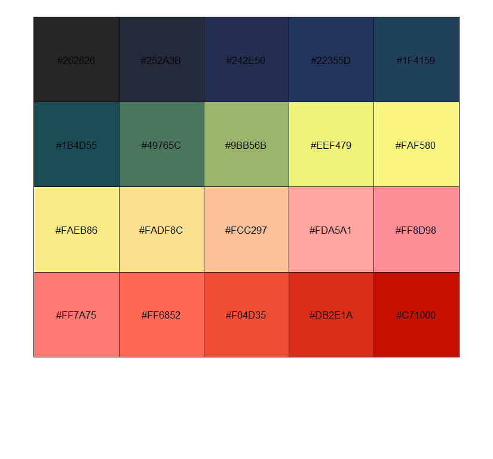
Multivariate analyses: Inferring population structure in simulated data
Loading the environmental data
library(raster)
library(virtualspecies)
#load bioclim files
setwd("C:/Users/chazh/Documents/Research Projects/Reticulitermes/Phylogeography/Geo_Analysis/Data/EnvData/bioclim/east coast/current")
fn <- list.files(pattern=".asc")
bio_stk <- stack()
for(i in 1:length(fn)) bio_stk <- addLayer(bio_stk,raster(fn[i]))
#modify variable names
nampres <- sub(pattern="Ecoast",replacement="",names(bio_stk))
nampres <- sub(pattern="_",replacement="",nampres)
nampres <- sub(pattern="_",replacement="",nampres)
names(bio_stk) <- nampres
##remove highly correlated variables
#rc_bio <- removeCollinearity(bio_stk, select.variables = TRUE, plot = TRUE, multicollinearity.cutoff = 0.3)
#plot parameters
par(mfrow=c(1,1),fg="gray50",pty='m',bty='o',mar=c(4,4,4,4),cex.main=1.3,cex.axis=1.1,cex.lab=1.2)
##names for plot titles
#bionames <- c("Isothermality","Annual Mean Temperature","Annual Precipitation","Temperature Seasonality","Precipitation Seasonality","Mean Diurnal Range","Temperature Annual Range","Max. Temperature Warmest Month","Min. Temperature Coldest Month","Mean Temperature Warmest Quarter","Precipitation Warmest Quarter","Mean Temperature Coldest Quarter","Precipitation Coldest Quarter","Mean Temperature Wettest Quarter","Precipitation Wettest Quarter","Mean Temperature Driest Quarter","Precipitation Driest Quarter","Precipitation Wettest Month","Precipitation Driest Month")
#biovars <- paste0("bio",c(3,1,12,4,15,2,7,5,6,10,18,19,11,8,16,9,17,13,14))
##plot bioclim variables left after removing collinearity
#for (i in rc_bio){
# plot(bio_stk[[i]], main=bionames[which(biovars==rc_bio[i])],
# breaks=seq(round(min(as.matrix(bio_stk[[i]]),na.rm=T),1),
# round(max(as.matrix(bio_stk[[i]]),na.rm=T),1),length.out=11),
# col=cols)
#}
setwd("C:/Users/chazh/Documents/Research Projects/Reticulitermes/Phylogeography/Geo_Analysis/Data/EnvData/bioclim_FA/east coast/Finalized/current")
fn <- list.files(pattern=".asc")
fa_stk <- stack()
for(i in 1:length(fn)) fa_stk=addLayer(fa_stk,raster(fn[i]))
#names for plot titles
fa_stk_names <- c("Annual Temperature Range", "Dry-Season Precipitation", "Summer Temperature", "Wet-Season Precipitation")
#plot Environmental Factors (https://datadryad.org/resource/doi:10.5061/dryad.5hr7f31)
for (i in 1:4){
plot(fa_stk[[i]], main=fa_stk_names[i],
breaks=seq(round(min(as.matrix(fa_stk[[i]]),na.rm=T),1),
round(max(as.matrix(fa_stk[[i]]),na.rm=T),1),length.out=11),
col=cols)
}
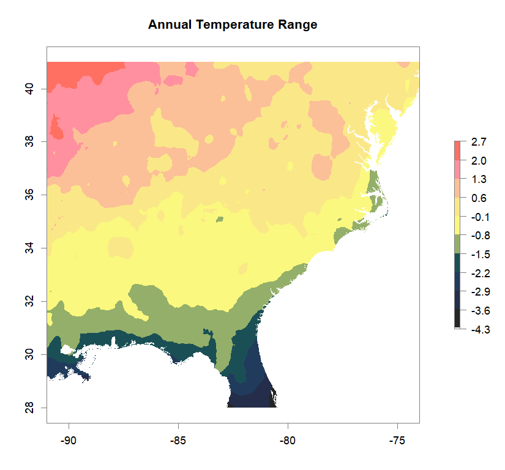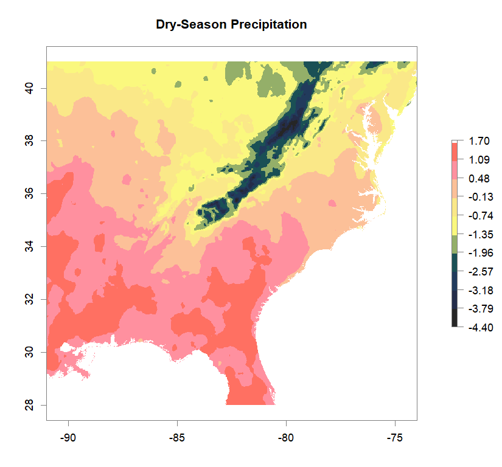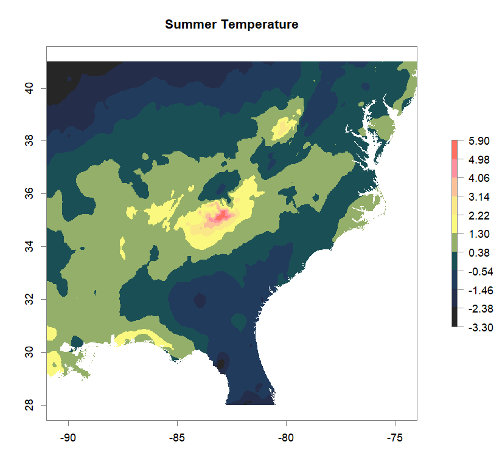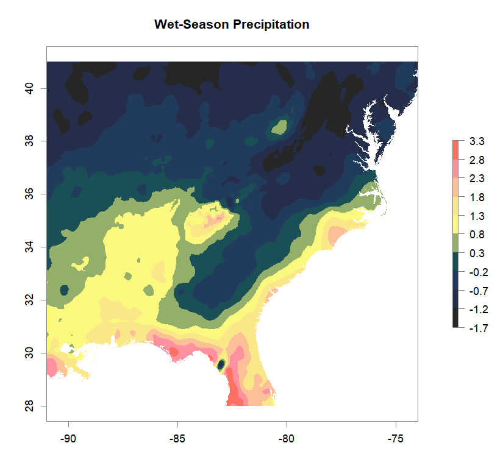
Loading the genetic data
library(adegenet)
m0.1_n <- "C:/Users/chazh/Documents/Research Projects/Reticulitermes/Simulations/popRange/m_0_1/Simulated_Genotypes/20pop_subsets/neutral_only/"
m0.1_n.s <- "C:/Users/chazh/Documents/Research Projects/Reticulitermes/Simulations/popRange/m_0_1/Simulated_Genotypes/20pop_subsets/neutral+selected/"
m0.1_s <- "C:/Users/chazh/Documents/Research Projects/Reticulitermes/Simulations/popRange/m_0_1/Simulated_Genotypes/20pop_subsets/selected_only/"
m0.5_n <- "C:/Users/chazh/Documents/Research Projects/Reticulitermes/Simulations/popRange/m_0_5/Simulated_Genotypes/20pop_subsets/neutral_only/"
m0.5_n.s <- "C:/Users/chazh/Documents/Research Projects/Reticulitermes/Simulations/popRange/m_0_5/Simulated_Genotypes/20pop_subsets/neutral+selected/"
m0.5_s <- "C:/Users/chazh/Documents/Research Projects/Reticulitermes/Simulations/popRange/m_0_5/Simulated_Genotypes/20pop_subsets/selected_only/"
setwd("C:/Users/chazh/Documents/Research Projects/Reticulitermes/NALgen_Analysis/Multivariate/")
#below I define the xyFromRC function: includes a scenario when genind and rastr don't have the same dimensions
#currently (for my purposes here it's fine) only spits out error when aspect ratio is not the same, but proceeds the same anyway
#need to fix to apply to other situations
xyFromRC <- function(genind, rastr){
coord <- genind$other
row.no <- coord[,1]+1
col.no <- coord[,2]+1
dim.genind.row <- 26 #dim of simulated landscape
dim.genind.col <- 34 #dim of simulated landscape
dim.rast.row <- dim(rastr)[1]
dim.rast.col <- dim(rastr)[2]
if(dim.rast.col/dim.genind.col == dim.rast.row/dim.genind.row){
print("raster and genind are the same aspect ratio. proceed.")
}
else{
print("error! raster and genind are NOT the same aspect ratio. proceed ANYWAY.")
}
rastr <- aggregate(rastr, dim.rast.col/dim.genind.col)
cell.no <- cellFromRowCol(rastr, row=row.no, col=col.no)
coord <- xyFromCell(rastr, cell.no)
as.data.frame(coord)
}
#use already aggregated fa_stk to make this go faster
fa_stk.agg <- aggregate(fa_stk, dim(fa_stk)[1]/26)
###m0.1###
##neutral ONLY##
m0.1_lclp_n <- read.genepop(paste0(m0.1_n,"lclp_only-neutr_20pops.gen"))
m0.1_lclp_n$other <- read.table(paste0(m0.1_n,"lclp_20pops_coords.txt"), sep=" ",header=F)
colnames(m0.1_lclp_n$other)=c("x","y")
m0.1_lclp_n$other <- xyFromRC(m0.1_lclp_n, fa_stk.agg)
m0.1_lchp_n <- read.genepop(paste0(m0.1_n,"lchp_only-neutr_20pops.gen"))
m0.1_lchp_n$other <- read.table(paste0(m0.1_n,"lchp_20pops_coords.txt"), sep=" ",header=F)
colnames(m0.1_lchp_n$other)=c("x","y")
m0.1_lchp_n$other <- xyFromRC(m0.1_lchp_n, fa_stk.agg)
m0.1_hchp_n <- read.genepop(paste0(m0.1_n,"hchp_only-neutr_20pops.gen"))
m0.1_hchp_n$other <- read.table(paste0(m0.1_n,"hchp_20pops_coords.txt"), sep=" ",header=F)
colnames(m0.1_hchp_n$other)=c("x","y")
m0.1_hchp_n$other <- xyFromRC(m0.1_hchp_n, fa_stk.agg)
m0.1_hclp_n <- read.genepop(paste0(m0.1_n,"hclp_only-neutr_20pops.gen"))
m0.1_hclp_n$other <- read.table(paste0(m0.1_n,"hclp_20pops_coords.txt"), sep=" ",header=F)
colnames(m0.1_hclp_n$other)=c("x","y")
m0.1_hclp_n$other <- xyFromRC(m0.1_hclp_n, fa_stk.agg)
##selected ONLY##
m0.1_lclp_s <- read.genepop(paste0(m0.1_s,"lclp_only-sel_20pops.gen"))
m0.1_lclp_s$other <- read.table(paste0(m0.1_s,"lclp_20pops_coords.txt"), sep=" ",header=F)
colnames(m0.1_lclp_s$other)=c("x","y")
m0.1_lclp_s$other <- xyFromRC(m0.1_lclp_s, fa_stk.agg)
m0.1_lchp_s <- read.genepop(paste0(m0.1_s,"lchp_only-sel_20pops.gen"))
m0.1_lchp_s$other <- read.table(paste0(m0.1_s,"lchp_20pops_coords.txt"), sep=" ",header=F)
colnames(m0.1_lchp_s$other)=c("x","y")
m0.1_lchp_s$other <- xyFromRC(m0.1_lchp_s, fa_stk.agg)
m0.1_hchp_s <- read.genepop(paste0(m0.1_s,"hchp_only-sel_20pops.gen"))
m0.1_hchp_s$other <- read.table(paste0(m0.1_s,"hchp_20pops_coords.txt"), sep=" ",header=F)
colnames(m0.1_hchp_s$other)=c("x","y")
m0.1_hchp_s$other <- xyFromRC(m0.1_hchp_s, fa_stk.agg)
m0.1_hclp_s <- read.genepop(paste0(m0.1_s,"hclp_only-sel_20pops.gen"))
m0.1_hclp_s$other <- read.table(paste0(m0.1_s,"hclp_20pops_coords.txt"), sep=" ",header=F)
colnames(m0.1_hclp_s$other)=c("x","y")
m0.1_hclp_s$other <- xyFromRC(m0.1_hclp_s, fa_stk.agg)
##neutral AND selected##
m0.1_lclp_n.s <- read.genepop(paste0(m0.1_n.s,"lclp_20pops.gen"))
m0.1_lclp_n.s$other <- read.table(paste0(m0.1_n.s,"lclp_20pops_coords.txt"), sep=" ",header=F)
colnames(m0.1_lclp_n.s$other)=c("x","y")
m0.1_lclp_n.s$other <- xyFromRC(m0.1_lclp_n.s, fa_stk.agg)
m0.1_lchp_n.s <- read.genepop(paste0(m0.1_n.s,"lchp_20pops.gen"))
m0.1_lchp_n.s$other <- read.table(paste0(m0.1_n.s,"lchp_20pops_coords.txt"), sep=" ",header=F)
colnames(m0.1_lchp_n.s$other)=c("x","y")
m0.1_lchp_n.s$other <- xyFromRC(m0.1_lchp_n.s, fa_stk.agg)
m0.1_hchp_n.s <- read.genepop(paste0(m0.1_n.s,"hchp_20pops.gen"))
m0.1_hchp_n.s$other <- read.table(paste0(m0.1_n.s,"hchp_20pops_coords.txt"), sep=" ",header=F)
colnames(m0.1_hchp_n.s$other)=c("x","y")
m0.1_hchp_n.s$other <- xyFromRC(m0.1_hchp_n.s, fa_stk.agg)
m0.1_hclp_n.s <- read.genepop(paste0(m0.1_n.s,"hclp_20pops.gen"))
m0.1_hclp_n.s$other <- read.table(paste0(m0.1_n.s,"hclp_20pops_coords.txt"), sep=" ",header=F)
colnames(m0.1_hclp_n.s$other)=c("x","y")
m0.1_hclp_n.s$other <- xyFromRC(m0.1_hclp_n.s, fa_stk.agg)
###m0.5###
##neutral ONLY##
m0.5_lclp_n <- read.genepop(paste0(m0.5_n,"lclp_only-neutr_20pops.gen"))
m0.5_lclp_n$other <- read.table(paste0(m0.5_n,"lclp_20pops_coords.txt"), sep=" ",header=F)
colnames(m0.5_lclp_n$other)=c("x","y")
m0.5_lclp_n$other <- xyFromRC(m0.5_lclp_n, fa_stk.agg)
m0.5_lchp_n$other <- read.table(paste0(m0.5_n,"lchp_20pops_coords.txt"), sep=" ",header=F)
colnames(m0.5_lchp_n$other)=c("x","y")
m0.5_lchp_n$other <- xyFromRC(m0.5_lchp_n, fa_stk.agg)
m0.5_hchp_n <- read.genepop(paste0(m0.5_n,"hchp_only-neutr_20pops.gen"))
m0.5_hchp_n$other <- read.table(paste0(m0.5_n,"hchp_20pops_coords.txt"), sep=" ",header=F)
colnames(m0.5_hchp_n$other)=c("x","y")
m0.5_hchp_n$other <- xyFromRC(m0.5_hchp_n, fa_stk.agg)
m0.5_hclp_n <- read.genepop(paste0(m0.5_n,"hclp_only-neutr_20pops.gen"))
m0.5_hclp_n$other <- read.table(paste0(m0.5_n,"hclp_20pops_coords.txt"), sep=" ",header=F)
colnames(m0.5_hclp_n$other)=c("x","y")
m0.5_hclp_n$other <- xyFromRC(m0.5_hclp_n, fa_stk.agg)
##selected ONLY##
m0.5_lclp_s <- read.genepop(paste0(m0.5_s,"lclp_only-sel_20pops.gen"))
m0.5_lclp_s$other <- read.table(paste0(m0.5_s,"lclp_20pops_coords.txt"), sep=" ",header=F)
colnames(m0.5_lclp_s$other)=c("x","y")
m0.5_lclp_s$other <- xyFromRC(m0.5_lclp_s, fa_stk.agg)
m0.5_lchp_s <- read.genepop(paste0(m0.5_s,"lchp_only-sel_20pops.gen"))
m0.5_lchp_s$other <- read.table(paste0(m0.5_s,"lchp_20pops_coords.txt"), sep=" ",header=F)
colnames(m0.5_lchp_s$other)=c("x","y")
m0.5_lchp_s$other <- xyFromRC(m0.5_lchp_s, fa_stk.agg)
m0.5_hchp_s <- read.genepop(paste0(m0.5_s,"hchp_only-sel_20pops.gen"))
m0.5_hchp_s$other <- read.table(paste0(m0.5_s,"hchp_20pops_coords.txt"), sep=" ",header=F)
colnames(m0.5_hchp_s$other)=c("x","y")
m0.5_hchp_s$other <- xyFromRC(m0.5_hchp_s, fa_stk.agg)
m0.5_hclp_s <- read.genepop(paste0(m0.5_s,"hclp_only-sel_20pops.gen"))
m0.5_hclp_s$other <- read.table(paste0(m0.5_s,"hclp_20pops_coords.txt"), sep=" ",header=F)
colnames(m0.5_hclp_s$other)=c("x","y")
m0.5_hclp_s$other <- xyFromRC(m0.5_hclp_s, fa_stk.agg)
##neutral AND selected##
m0.5_lclp_n.s <- read.genepop(paste0(m0.5_n.s,"lclp_20pops.gen"))
m0.5_lclp_n.s$other <- read.table(paste0(m0.5_n.s,"lclp_20pops_coords.txt"), sep=" ",header=F)
colnames(m0.5_lclp_n.s$other)=c("x","y")
m0.5_lclp_n.s$other <- xyFromRC(m0.5_lclp_n.s, fa_stk.agg)
m0.5_lchp_n.s <- read.genepop(paste0(m0.5_n.s,"lchp_20pops.gen"))
m0.5_lchp_n.s$other <- read.table(paste0(m0.5_n.s,"lchp_20pops_coords.txt"), sep=" ",header=F)
colnames(m0.5_lchp_n.s$other)=c("x","y")
m0.5_lchp_n.s$other <- xyFromRC(m0.5_lchp_n.s, fa_stk.agg)
m0.5_hchp_n.s <- read.genepop(paste0(m0.5_n.s,"hchp_20pops.gen"))
m0.5_hchp_n.s$other <- read.table(paste0(m0.5_n.s,"hchp_20pops_coords.txt"), sep=" ",header=F)
colnames(m0.5_hchp_n.s$other)=c("x","y")
m0.5_hchp_n.s$other <- xyFromRC(m0.5_hchp_n.s, fa_stk.agg)
m0.5_hclp_n.s <- read.genepop(paste0(m0.5_n.s,"hclp_20pops.gen"))
m0.5_hclp_n.s$other <- read.table(paste0(m0.5_n.s,"hclp_20pops_coords.txt"), sep=" ",header=F)
colnames(m0.5_hclp_n.s$other)=c("x","y")
m0.5_hclp_n.s$other <- xyFromRC(m0.5_hclp_n.s, fa_stk.agg)
Inferring population structure with Discriminant Analysis of Principal Components (DAPC)
temp.dapc.obj <- dapc(m0.1_lclp_n, center=T, scale=F, n.pca=100, n.da=2)
temp <- optim.a.score(temp.dapc.obj, n=15, n.sim=30)
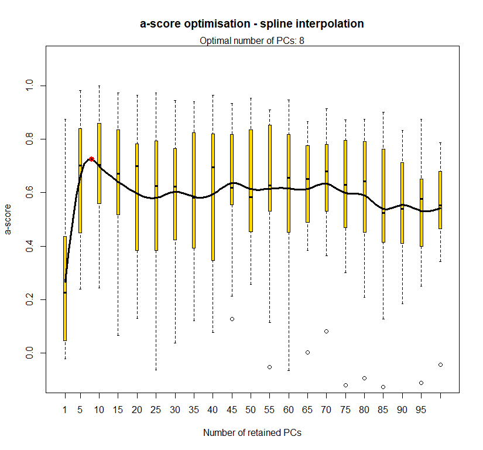
best.n.pca <- temp$best
dapc.obj <- dapc(m0.1_lclp_n, center=T, scale=F, n.pca=best.n.pca, n.da=2)
#plot parameters
par(mfrow=c(1,1), fg="gray50", pty='m', bty='o', mar=c(4,4,4,4), cex.main=1.3, cex.axis=1.1, cex.lab=1.2)
scatter(dapc.obj, col=futrschwift.cols(20), ratio.pca=0.3, bg="white", main="m = 0.1, low complexity, low permeability, neutral loci only",
pch=c(16,15,18,17), cell=0, cstar=0, solid=0.9, cex=1.8, clab=0,
mstree=TRUE, lwd=3, scree.da=FALSE, leg=TRUE, txt.leg=popNames(m0.1_lclp_n))
par(xpd=TRUE)
points(dapc.obj$grp.coord[,1], dapc.obj$grp.coord[,2], pch=21:24, cex=2, lwd=3, col="black", bg=futrschwift.cols(20))
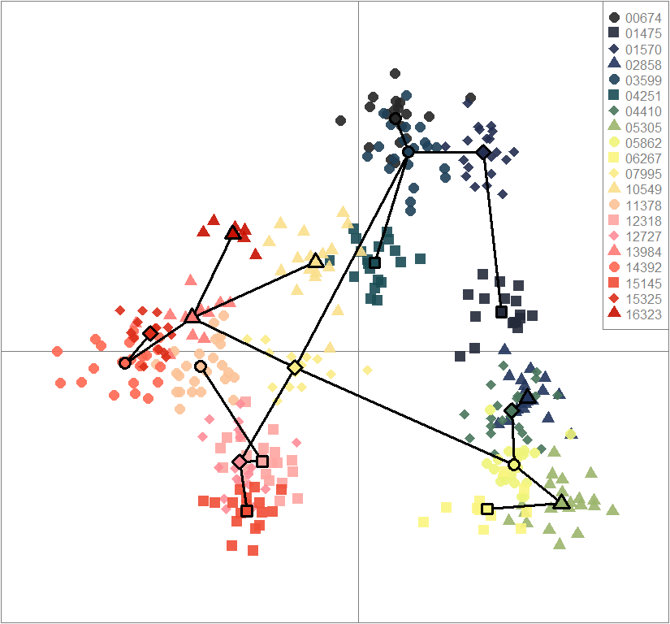
compoplot(dapc.obj, lab="", col=futrschwift.cols(20))
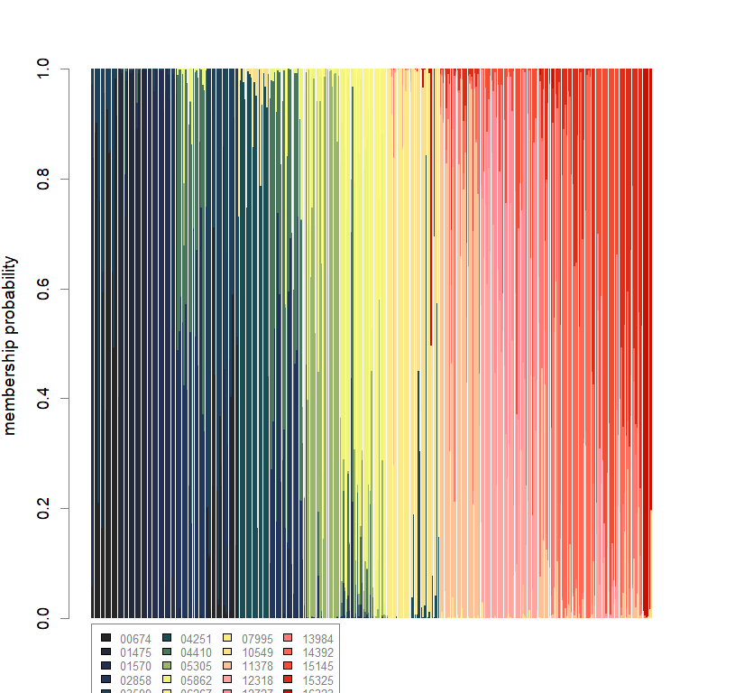
temp.dapc.obj <- dapc(m0.1_lclp_s, center=T, scale=F, n.pca=length(m0.1_lclp_s@tab[1,]), n.da=2)
temp <- optim.a.score(temp.dapc.obj, n=15, n.sim=30)
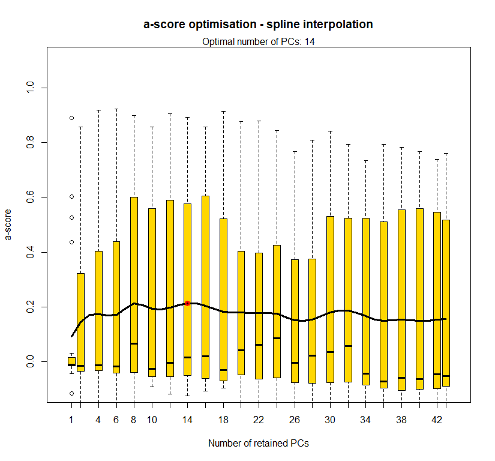
best.n.pca <- temp$best
dapc.obj <- dapc(m0.1_lclp_s, center=T, scale=F, n.pca=best.n.pca, n.da=2)
#plot parameters
par(mfrow=c(1,1), fg="gray50", pty='m', bty='o', mar=c(4,4,4,4), cex.main=1.3, cex.axis=1.1, cex.lab=1.2)
scatter(dapc.obj, col=futrschwift.cols(20), ratio.pca=0.3, bg="white", main="m = 0.1, low complexity, low permeability, selected loci only",
pch=c(16,15,18,17), cell=0, cstar=0, solid=0.9, cex=1.8, clab=0,
mstree=TRUE, lwd=3, scree.da=FALSE, leg=TRUE, txt.leg=popNames(m0.1_lclp_s))
par(xpd=TRUE)
points(dapc.obj$grp.coord[,1], dapc.obj$grp.coord[,2], pch=21:24, cex=2, lwd=3, col="black", bg=futrschwift.cols(20))
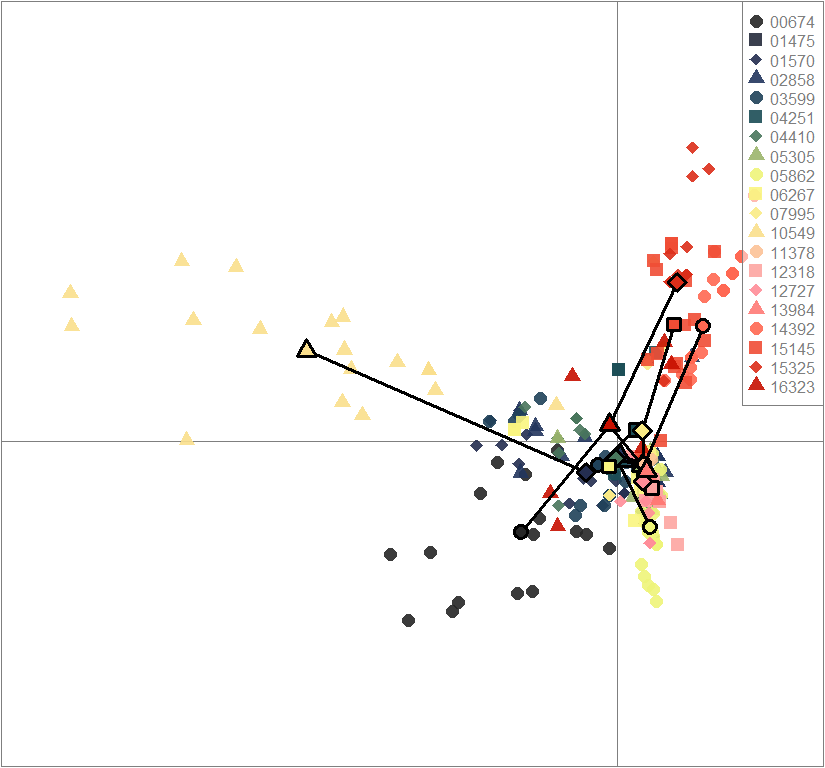
compoplot(dapc.obj, lab="", col=futrschwift.cols(20))
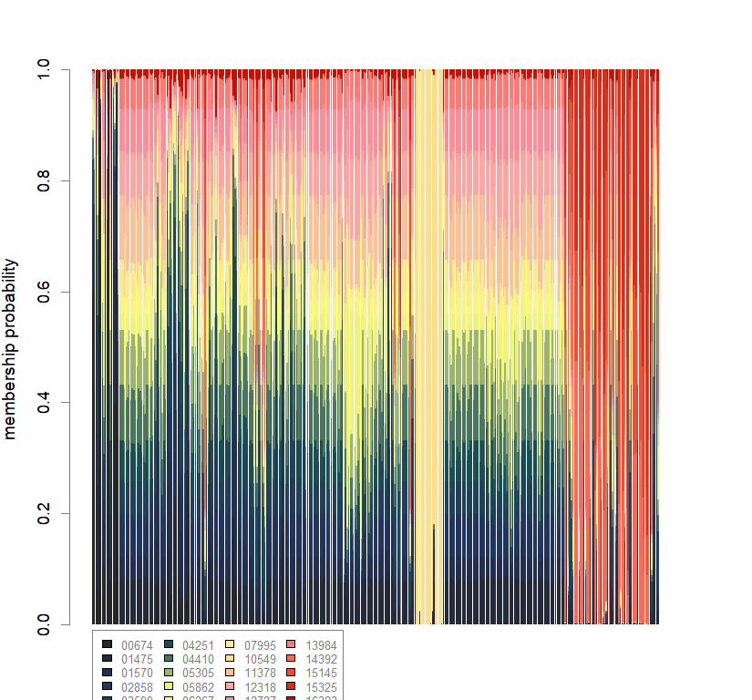
temp.dapc.obj <- dapc(m0.1_lclp_n.s, center=T, scale=F, n.pca=100, n.da=2)
temp <- optim.a.score(temp.dapc.obj, n=15, n.sim=30)
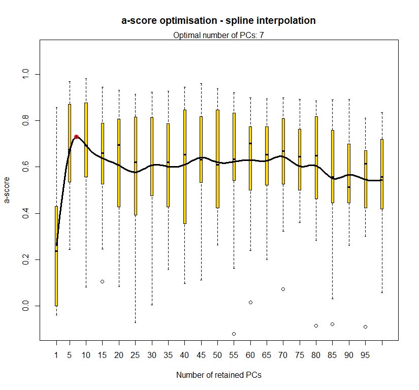
best.n.pca <- temp$best
dapc.obj <- dapc(m0.1_lclp_n.s, center=T, scale=F, n.pca=best.n.pca, n.da=2)
#plot parameters
par(mfrow=c(1,1), fg="gray50", pty='m', bty='o', mar=c(4,4,4,4), cex.main=1.3, cex.axis=1.1, cex.lab=1.2)
scatter(dapc.obj, col=futrschwift.cols(20), ratio.pca=0.3, bg="white", main="m = 0.1, low complexity, low permeability, neutral and selected loci",
pch=c(16,15,18,17), cell=0, cstar=0, solid=0.9, cex=1.8, clab=0,
mstree=TRUE, lwd=3, scree.da=FALSE, leg=TRUE, txt.leg=popNames(m0.1_lclp_n.s))
par(xpd=TRUE)
points(dapc.obj$grp.coord[,1], dapc.obj$grp.coord[,2], pch=21:24, cex=2, lwd=3, col="black", bg=futrschwift.cols(20))
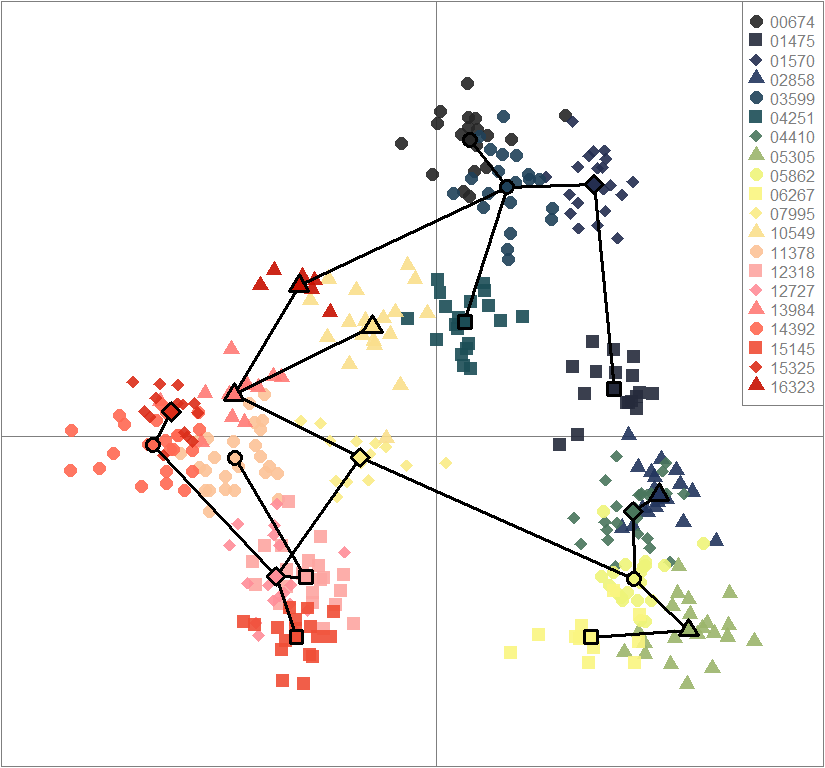
compoplot(dapc.obj, lab="", col=futrschwift.cols(20))
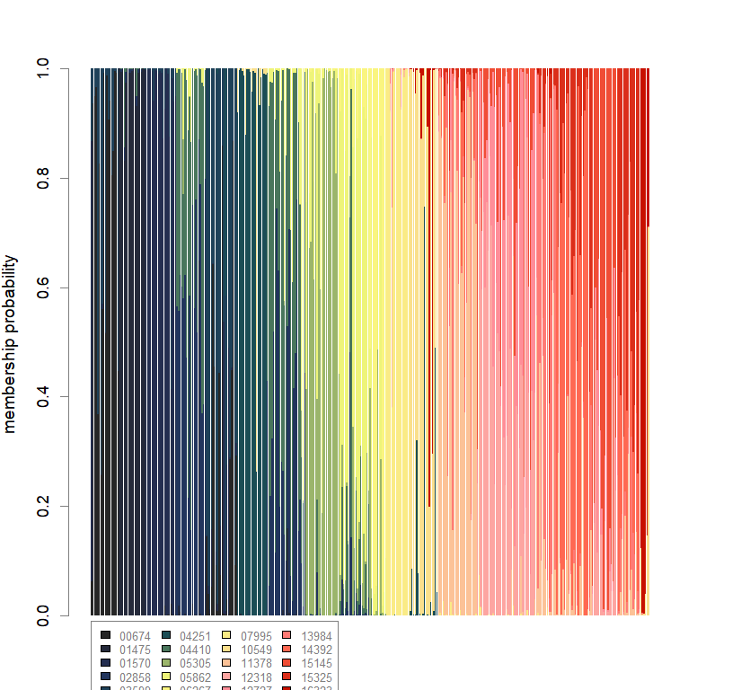
temp.dapc.obj <- dapc(m0.5_lclp_n, center=T, scale=F, n.pca=100, n.da=2)
temp <- optim.a.score(temp.dapc.obj, n=15, n.sim=30)
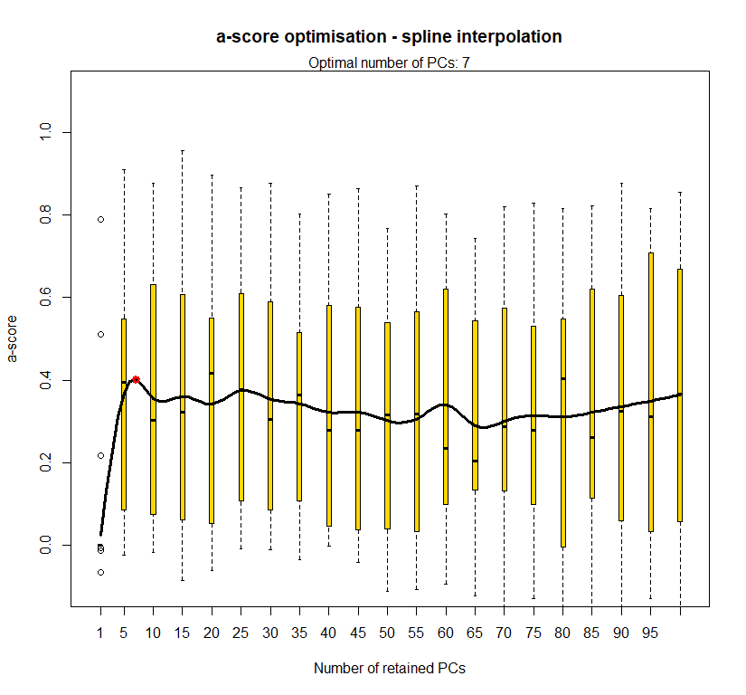
best.n.pca <- temp$best
dapc.obj <- dapc(m0.5_lclp_n, center=T, scale=F, n.pca=best.n.pca, n.da=2)
#plot parameters
par(mfrow=c(1,1), fg="gray50", pty='m', bty='o', mar=c(4,4,4,4), cex.main=1.3, cex.axis=1.1, cex.lab=1.2)
scatter(dapc.obj, col=futrschwift.cols(20), ratio.pca=0.3, bg="white", main="m = 0.5, low complexity, low permeability, neutral loci only",
pch=c(16,15,18,17), cell=0, cstar=0, solid=0.9, cex=1.8, clab=0,
mstree=TRUE, lwd=3, scree.da=FALSE, leg=TRUE, txt.leg=popNames(m0.5_lclp_n))
par(xpd=TRUE)
points(dapc.obj$grp.coord[,1], dapc.obj$grp.coord[,2], pch=21:24, cex=2, lwd=3, col="black", bg=futrschwift.cols(20))
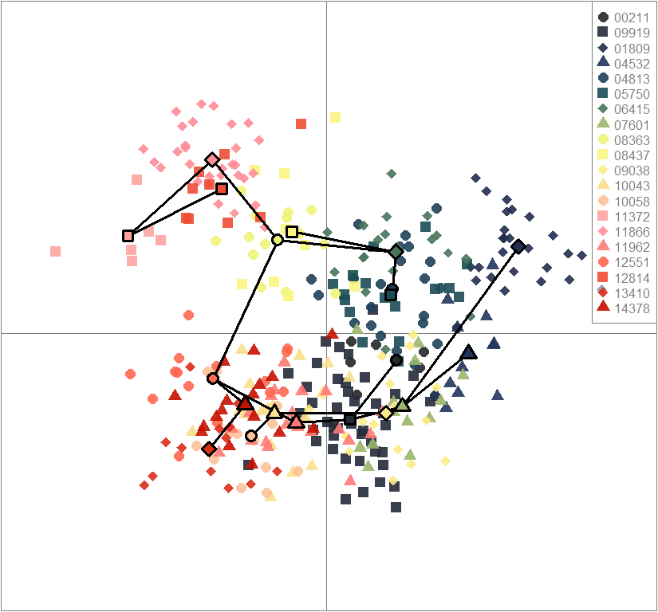
compoplot(dapc.obj, lab="", col=futrschwift.cols(20))
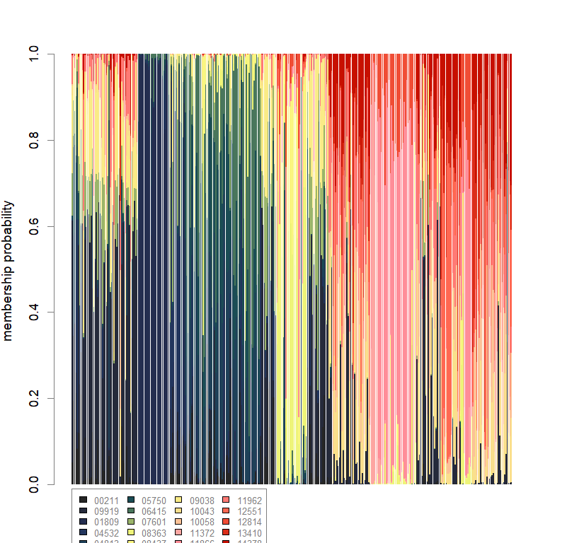
temp.dapc.obj <- dapc(m0.5_lclp_s, center=T, scale=F, n.pca=length(m0.5_lclp_s@tab[1,]), n.da=2)
temp <- optim.a.score(temp.dapc.obj, n=15, n.sim=30)
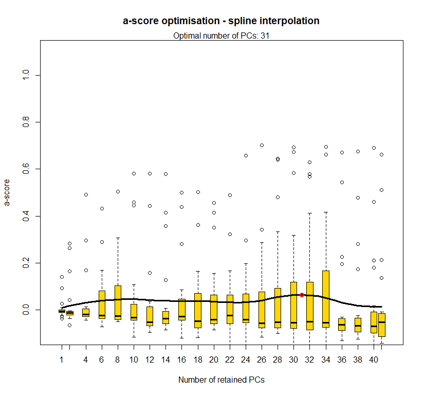
best.n.pca <- temp$best
dapc.obj <- dapc(m0.5_lclp_s, center=T, scale=F, n.pca=best.n.pca, n.da=2)
#plot parameters
par(mfrow=c(1,1), fg="gray50", pty='m', bty='o', mar=c(4,4,4,4), cex.main=1.3, cex.axis=1.1, cex.lab=1.2)
scatter(dapc.obj, col=futrschwift.cols(20), ratio.pca=0.3, bg="white", main="m = 0.5, low complexity, low permeability, selected loci only",
pch=c(16,15,18,17), cell=0, cstar=0, solid=0.9, cex=1.8, clab=0,
mstree=TRUE, lwd=3, scree.da=FALSE, leg=TRUE, txt.leg=popNames(m0.5_lclp_s))
par(xpd=TRUE)
points(dapc.obj$grp.coord[,1], dapc.obj$grp.coord[,2], pch=21:24, cex=2, lwd=3, col="black", bg=futrschwift.cols(20))
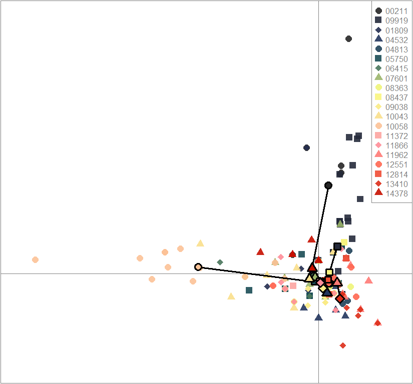
compoplot(dapc.obj, lab="", col=futrschwift.cols(20))
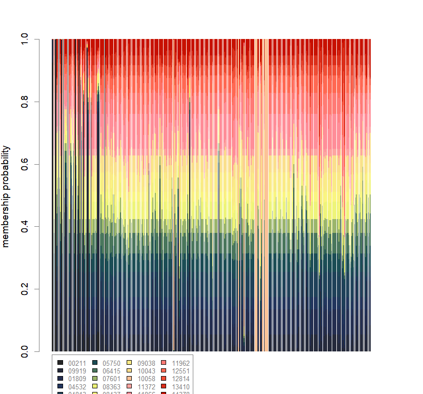
temp.dapc.obj <- dapc(m0.5_lclp_n.s, center=T, scale=F, n.pca=100, n.da=2)
temp <- optim.a.score(temp.dapc.obj, n=15, n.sim=30)
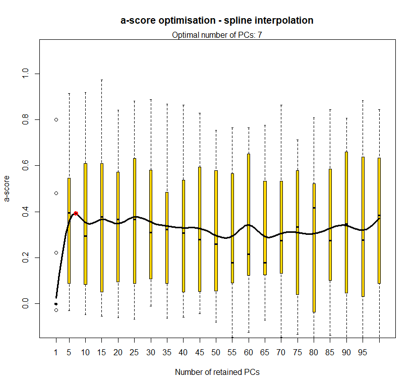
best.n.pca <- temp$best
dapc.obj <- dapc(m0.5_lclp_n.s, center=T, scale=F, n.pca=best.n.pca, n.da=2)
#plot parameters
par(mfrow=c(1,1), fg="gray50", pty='m', bty='o', mar=c(4,4,4,4), cex.main=1.3, cex.axis=1.1, cex.lab=1.2)
scatter(dapc.obj, col=futrschwift.cols(20), ratio.pca=0.3, bg="white", main="m = 0.5, low complexity, low permeability, neutral and selected loci",
pch=c(16,15,18,17), cell=0, cstar=0, solid=0.9, cex=1.8, clab=0,
mstree=TRUE, lwd=3, scree.da=FALSE, leg=TRUE, txt.leg=popNames(m0.5_lclp_n.s))
par(xpd=TRUE)
points(dapc.obj$grp.coord[,1], dapc.obj$grp.coord[,2], pch=21:24, cex=2, lwd=3, col="black", bg=futrschwift.cols(20))

compoplot(dapc.obj, lab="", col=futrschwift.cols(20))
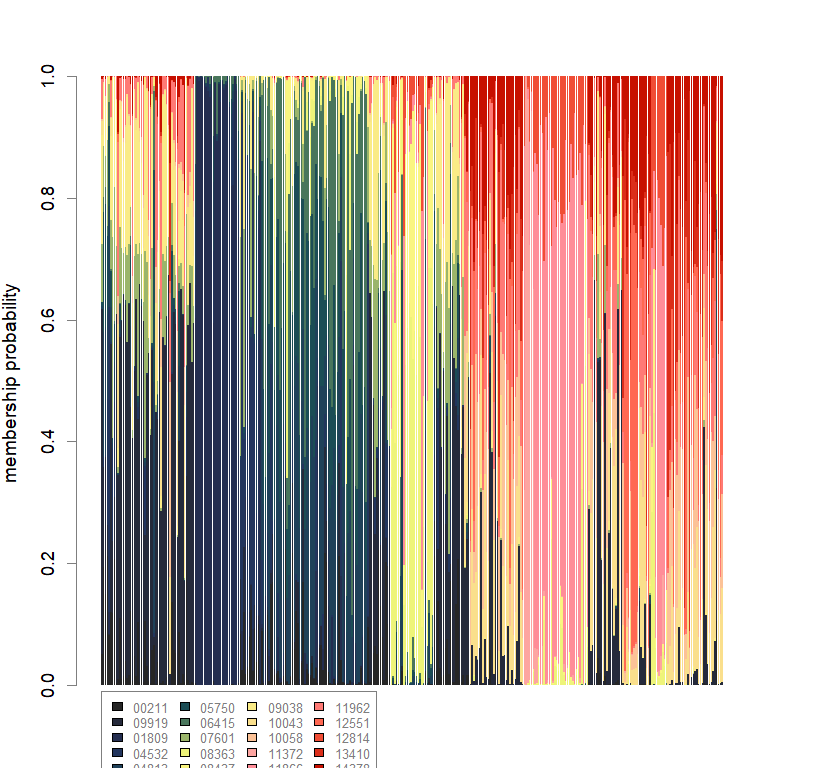
temp.dapc.obj <- dapc(m0.1_lchp_n, center=T, scale=F, n.pca=100, n.da=2)
temp <- optim.a.score(temp.dapc.obj, n=15, n.sim=30)
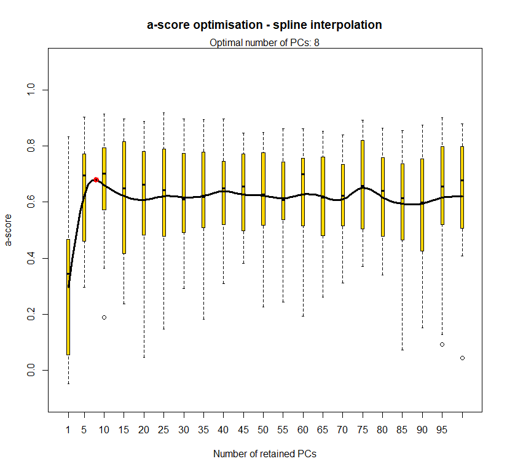
best.n.pca <- temp$best
dapc.obj <- dapc(m0.1_lchp_n, center=T, scale=F, n.pca=best.n.pca, n.da=2)
#plot parameters
par(mfrow=c(1,1), fg="gray50", pty='m', bty='o', mar=c(4,4,4,4), cex.main=1.3, cex.axis=1.1, cex.lab=1.2)
scatter(dapc.obj, col=futrschwift.cols(20), ratio.pca=0.3, bg="white", main="m = 0.1, low complexity, high permeability, neutral loci only",
pch=c(16,15,18,17), cell=0, cstar=0, solid=0.9, cex=1.8, clab=0,
mstree=TRUE, lwd=3, scree.da=FALSE, leg=TRUE, txt.leg=popNames(m0.1_lchp_n))
par(xpd=TRUE)
points(dapc.obj$grp.coord[,1], dapc.obj$grp.coord[,2], pch=21:24, cex=2, lwd=3, col="black", bg=futrschwift.cols(20))
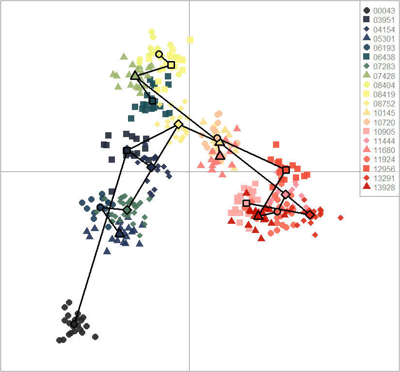
compoplot(dapc.obj, lab="", col=futrschwift.cols(20))
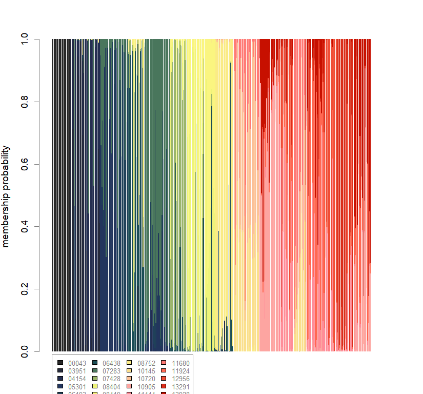
temp.dapc.obj <- dapc(m0.1_lchp_s, center=T, scale=F, n.pca=length(m0.1_lchp_s@tab[1,]), n.da=2)
temp <- optim.a.score(temp.dapc.obj, n=15, n.sim=30)
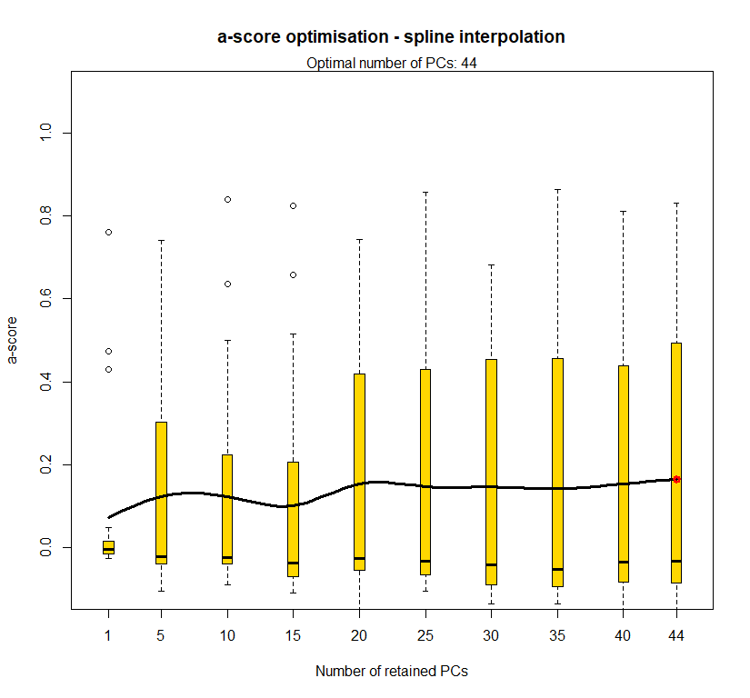
best.n.pca <- temp$best
dapc.obj <- dapc(m0.1_lchp_s, center=T, scale=F, n.pca=best.n.pca, n.da=2)
#plot parameters
par(mfrow=c(1,1), fg="gray50", pty='m', bty='o', mar=c(4,4,4,4), cex.main=1.3, cex.axis=1.1, cex.lab=1.2)
scatter(dapc.obj, col=futrschwift.cols(20), ratio.pca=0.3, bg="white", main="m = 0.1, low complexity, high permeability, selected loci only",
pch=c(16,15,18,17), cell=0, cstar=0, solid=0.9, cex=1.8, clab=0,
mstree=TRUE, lwd=3, scree.da=FALSE, leg=TRUE, txt.leg=popNames(m0.1_lchp_s))
par(xpd=TRUE)
points(dapc.obj$grp.coord[,1], dapc.obj$grp.coord[,2], pch=21:24, cex=2, lwd=3, col="black", bg=futrschwift.cols(20))
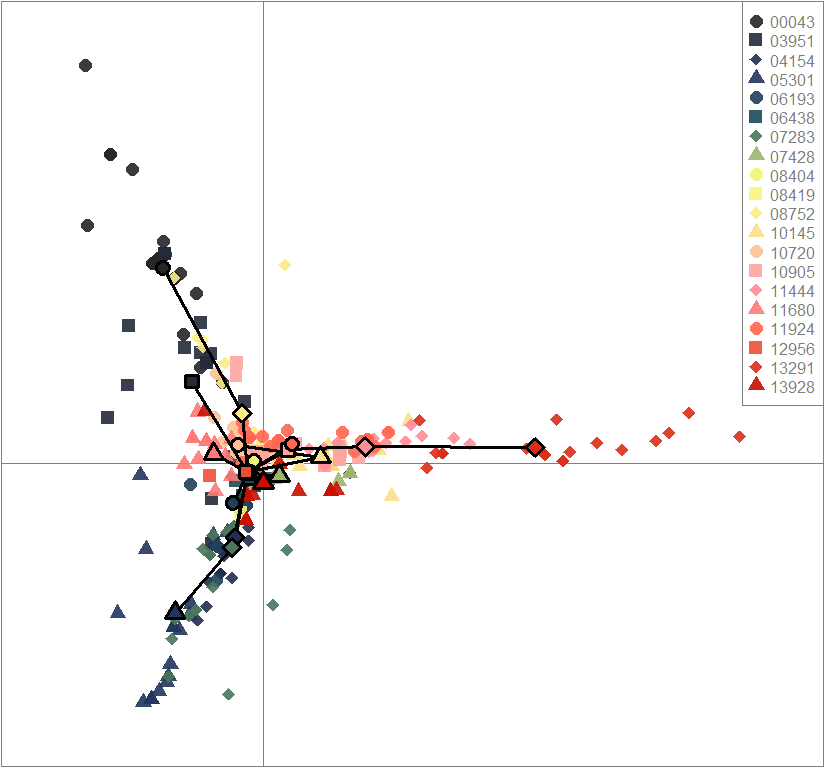
compoplot(dapc.obj, lab="", col=futrschwift.cols(20))
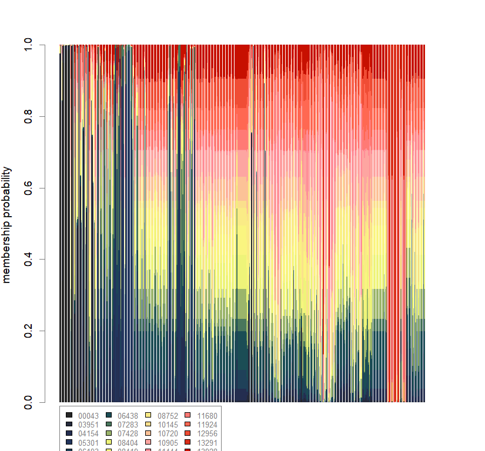
temp.dapc.obj <- dapc(m0.1_lchp_n.s, center=T, scale=F, n.pca=100, n.da=2)
temp <- optim.a.score(temp.dapc.obj, n=15, n.sim=30)
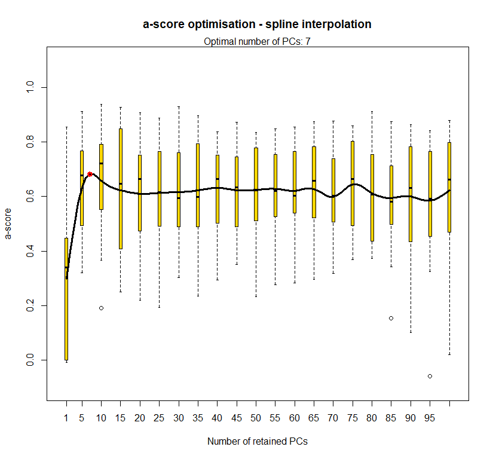
best.n.pca <- temp$best
dapc.obj <- dapc(m0.1_lchp_n.s, center=T, scale=F, n.pca=best.n.pca, n.da=2)
#plot parameters
par(mfrow=c(1,1), fg="gray50", pty='m', bty='o', mar=c(4,4,4,4), cex.main=1.3, cex.axis=1.1, cex.lab=1.2)
scatter(dapc.obj, col=futrschwift.cols(20), ratio.pca=0.3, bg="white", main="m = 0.1, low complexity, high permeability, neutral and selected loci",
pch=c(16,15,18,17), cell=0, cstar=0, solid=0.9, cex=1.8, clab=0,
mstree=TRUE, lwd=3, scree.da=FALSE, leg=TRUE, txt.leg=popNames(m0.1_lchp_n.s))
par(xpd=TRUE)
points(dapc.obj$grp.coord[,1], dapc.obj$grp.coord[,2], pch=21:24, cex=2, lwd=3, col="black", bg=futrschwift.cols(20))
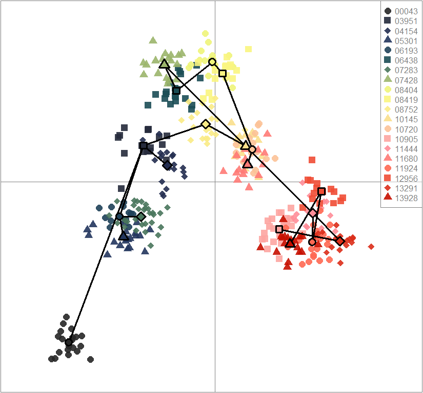
compoplot(dapc.obj, lab="", col=futrschwift.cols(20))
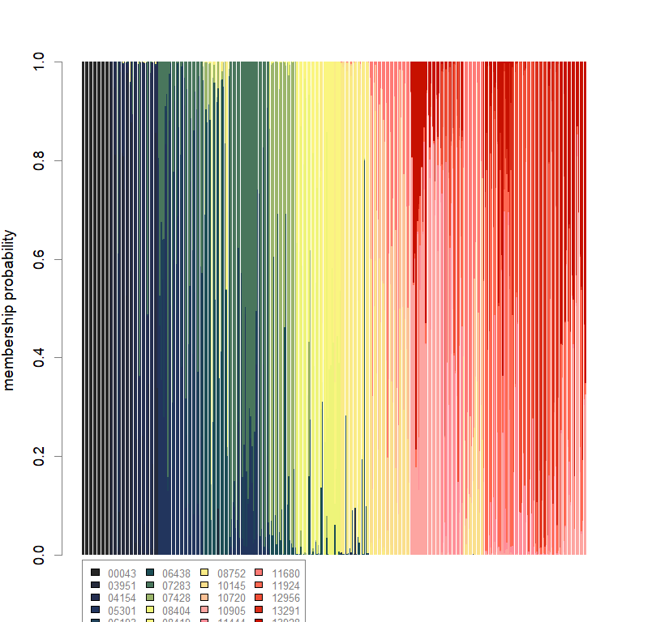
temp.dapc.obj <- dapc(m0.5_lchp_n, center=T, scale=F, n.pca=100, n.da=2)
temp <- optim.a.score(temp.dapc.obj, n=15, n.sim=30)
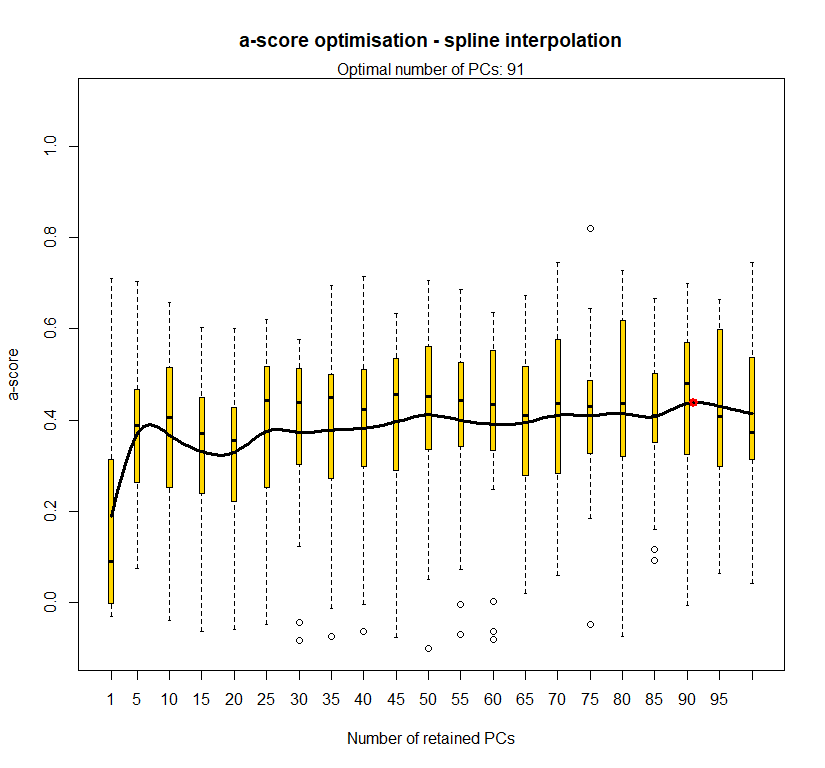
best.n.pca <- temp$best
dapc.obj <- dapc(m0.5_lchp_n, center=T, scale=F, n.pca=best.n.pca, n.da=2)
#plot parameters
par(mfrow=c(1,1), fg="gray50", pty='m', bty='o', mar=c(4,4,4,4), cex.main=1.3, cex.axis=1.1, cex.lab=1.2)
scatter(dapc.obj, col=futrschwift.cols(20), ratio.pca=0.3, bg="white", main="m = 0.5, low complexity, high permeability, neutral loci only",
pch=c(16,15,18,17), cell=0, cstar=0, solid=0.9, cex=1.8, clab=0,
mstree=TRUE, lwd=3, scree.da=FALSE, leg=TRUE, txt.leg=popNames(m0.5_lchp_n))
par(xpd=TRUE)
points(dapc.obj$grp.coord[,1], dapc.obj$grp.coord[,2], pch=21:24, cex=2, lwd=3, col="black", bg=futrschwift.cols(20))
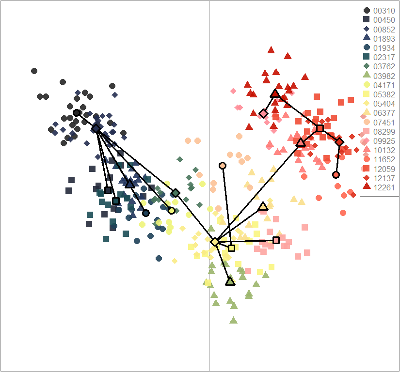
compoplot(dapc.obj, lab="", col=futrschwift.cols(20))

temp.dapc.obj <- dapc(m0.5_lchp_s, center=T, scale=F, n.pca=length(m0.5_lchp_s@tab[1,]), n.da=2)
temp <- optim.a.score(temp.dapc.obj, n=15, n.sim=30)
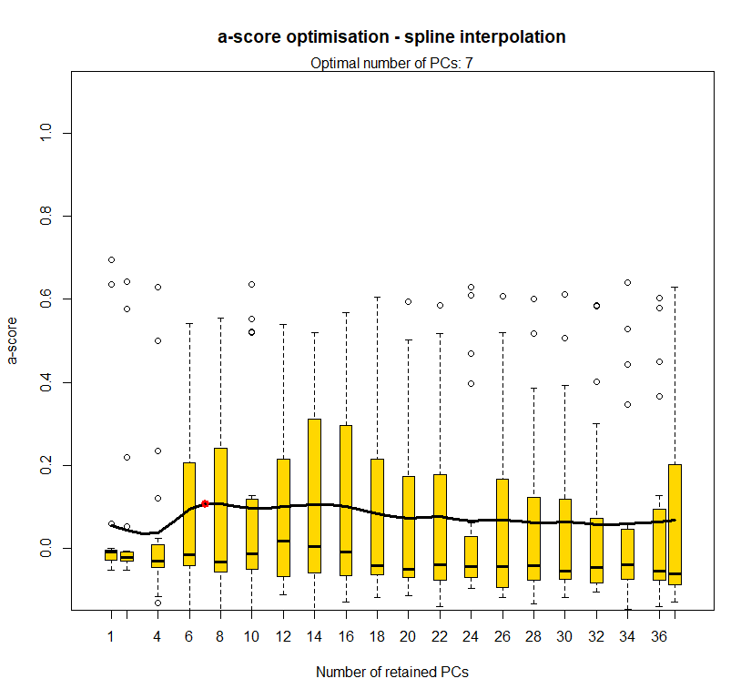
best.n.pca <- temp$best
dapc.obj <- dapc(m0.5_lchp_s, center=T, scale=F, n.pca=best.n.pca, n.da=2)
#plot parameters
par(mfrow=c(1,1), fg="gray50", pty='m', bty='o', mar=c(4,4,4,4), cex.main=1.3, cex.axis=1.1, cex.lab=1.2)
scatter(dapc.obj, col=futrschwift.cols(20), ratio.pca=0.3, bg="white", main="m = 0.5, low complexity, high permeability, selected loci only",
pch=c(16,15,18,17), cell=0, cstar=0, solid=0.9, cex=1.8, clab=0,
mstree=TRUE, lwd=3, scree.da=FALSE, leg=TRUE, txt.leg=popNames(m0.5_lchp_s))
par(xpd=TRUE)
points(dapc.obj$grp.coord[,1], dapc.obj$grp.coord[,2], pch=21:24, cex=2, lwd=3, col="black", bg=futrschwift.cols(20))
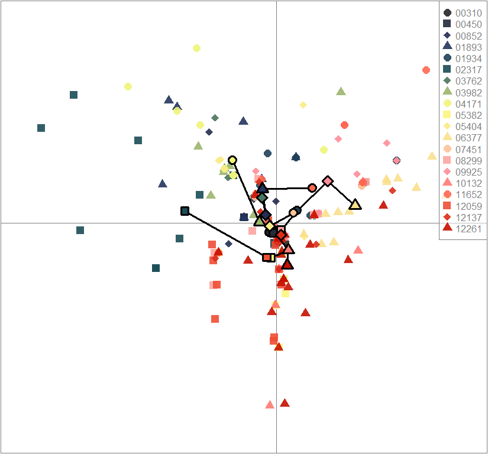
compoplot(dapc.obj, lab="", col=futrschwift.cols(20))
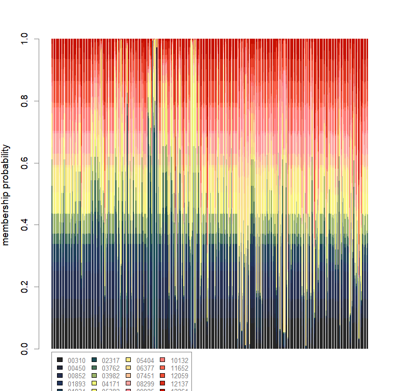
temp.dapc.obj <- dapc(m0.5_lchp_n.s, center=T, scale=F, n.pca=100, n.da=2)
temp <- optim.a.score(temp.dapc.obj, n=15, n.sim=30)
best.n.pca <- temp$best
dapc.obj <- dapc(m0.5_lchp_n.s, center=T, scale=F, n.pca=best.n.pca, n.da=2)
#plot parameters
par(mfrow=c(1,1), fg="gray50", pty='m', bty='o', mar=c(4,4,4,4), cex.main=1.3, cex.axis=1.1, cex.lab=1.2)
scatter(dapc.obj, col=futrschwift.cols(20), ratio.pca=0.3, bg="white", main="m = 0.5, low complexity, high permeability, neutral and selected loci",
pch=c(16,15,18,17), cell=0, cstar=0, solid=0.9, cex=1.8, clab=0,
mstree=TRUE, lwd=3, scree.da=FALSE, leg=TRUE, txt.leg=popNames(m0.5_lchp_n.s))
par(xpd=TRUE)
points(dapc.obj$grp.coord[,1], dapc.obj$grp.coord[,2], pch=21:24, cex=2, lwd=3, col="black", bg=futrschwift.cols(20))
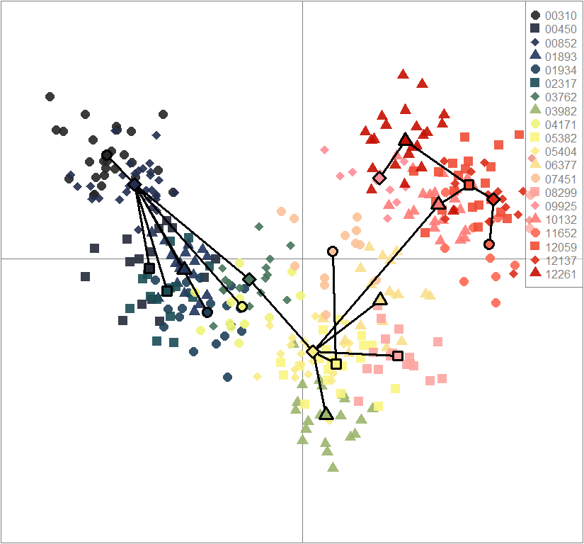
compoplot(dapc.obj, lab="", col=futrschwift.cols(20))
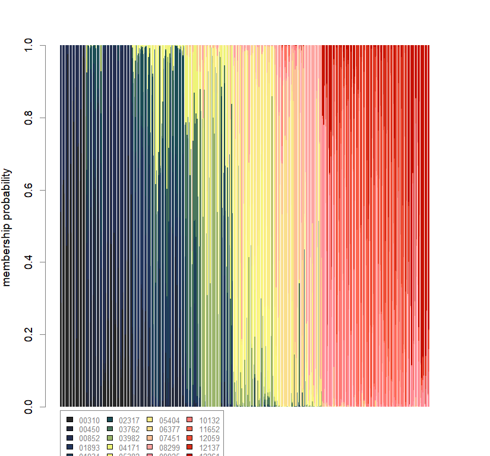
temp.dapc.obj <- dapc(m0.1_hclp_n, center=T, scale=F, n.pca=100, n.da=2)
temp <- optim.a.score(temp.dapc.obj, n=15, n.sim=30)
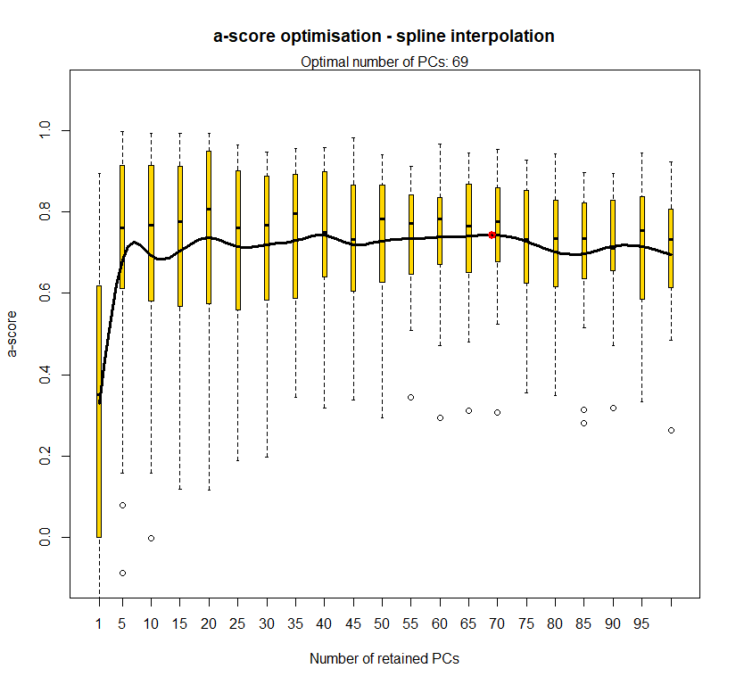
best.n.pca <- temp$best
dapc.obj <- dapc(m0.1_hclp_n, center=T, scale=F, n.pca=best.n.pca, n.da=2)
#plot parameters
par(mfrow=c(1,1), fg="gray50", pty='m', bty='o', mar=c(4,4,4,4), cex.main=1.3, cex.axis=1.1, cex.lab=1.2)
scatter(dapc.obj, col=futrschwift.cols(20), ratio.pca=0.3, bg="white", main="m = 0.1, high complexity, low permeability, neutral loci only",
pch=c(16,15,18,17), cell=0, cstar=0, solid=0.9, cex=1.8, clab=0,
mstree=TRUE, lwd=3, scree.da=FALSE, leg=TRUE, txt.leg=popNames(m0.1_hclp_n))
par(xpd=TRUE)
points(dapc.obj$grp.coord[,1], dapc.obj$grp.coord[,2], pch=21:24, cex=2, lwd=3, col="black", bg=futrschwift.cols(20))
compoplot(dapc.obj, lab="", col=futrschwift.cols(20))
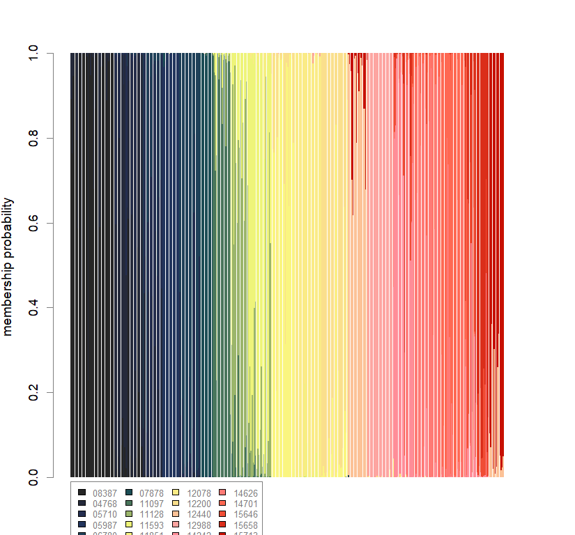
temp.dapc.obj <- dapc(m0.1_hclp_s, center=T, scale=F, n.pca=length(m0.1_hclp_s@tab[1,]), n.da=2)
temp <- optim.a.score(temp.dapc.obj, n=15, n.sim=30)
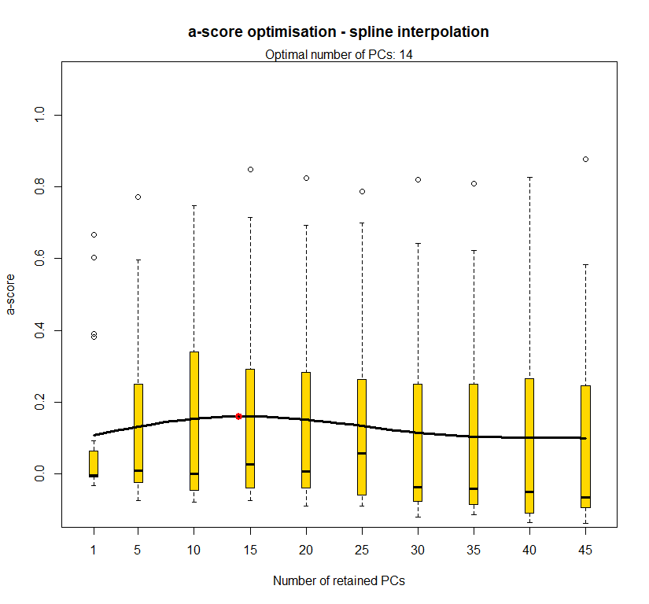
best.n.pca <- temp$best
dapc.obj <- dapc(m0.1_hclp_s, center=T, scale=F, n.pca=best.n.pca, n.da=2)
#plot parameters
par(mfrow=c(1,1), fg="gray50", pty='m', bty='o', mar=c(4,4,4,4), cex.main=1.3, cex.axis=1.1, cex.lab=1.2)
scatter(dapc.obj, col=futrschwift.cols(20), ratio.pca=0.3, bg="white", main="m = 0.1, high complexity, low permeability, selected loci only",
pch=c(16,15,18,17), cell=0, cstar=0, solid=0.9, cex=1.8, clab=0,
mstree=TRUE, lwd=3, scree.da=FALSE, leg=TRUE, txt.leg=popNames(m0.1_hclp_s))
par(xpd=TRUE)
points(dapc.obj$grp.coord[,1], dapc.obj$grp.coord[,2], pch=21:24, cex=2, lwd=3, col="black", bg=futrschwift.cols(20))
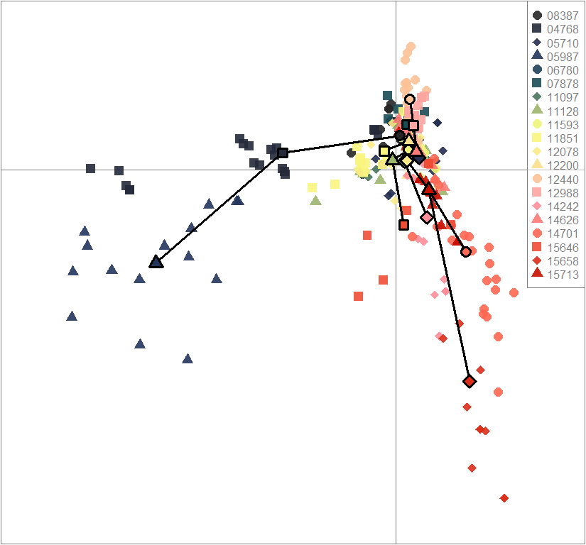
compoplot(dapc.obj, lab="", col=futrschwift.cols(20))
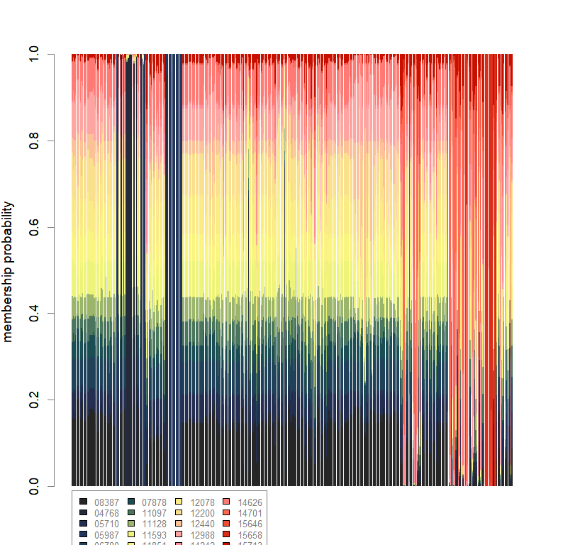
temp.dapc.obj <- dapc(m0.1_hclp_n.s, center=T, scale=F, n.pca=100, n.da=2)
temp <- optim.a.score(temp.dapc.obj, n=15, n.sim=30)
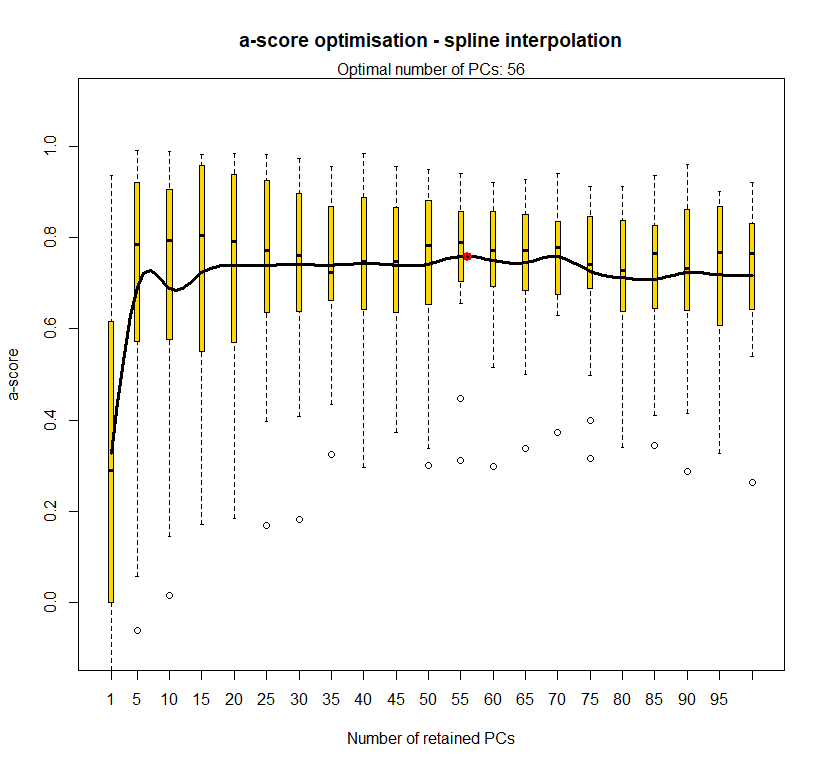
best.n.pca <- temp$best
dapc.obj <- dapc(m0.1_hclp_n.s, center=T, scale=F, n.pca=best.n.pca, n.da=2)
#plot parameters
par(mfrow=c(1,1), fg="gray50", pty='m', bty='o', mar=c(4,4,4,4), cex.main=1.3, cex.axis=1.1, cex.lab=1.2)
scatter(dapc.obj, col=futrschwift.cols(20), ratio.pca=0.3, bg="white", main="m = 0.1, high complexity, low permeability, neutral and selected loci",
pch=c(16,15,18,17), cell=0, cstar=0, solid=0.9, cex=1.8, clab=0,
mstree=TRUE, lwd=3, scree.da=FALSE, leg=TRUE, txt.leg=popNames(m0.1_hclp_n.s))
par(xpd=TRUE)
points(dapc.obj$grp.coord[,1], dapc.obj$grp.coord[,2], pch=21:24, cex=2, lwd=3, col="black", bg=futrschwift.cols(20))
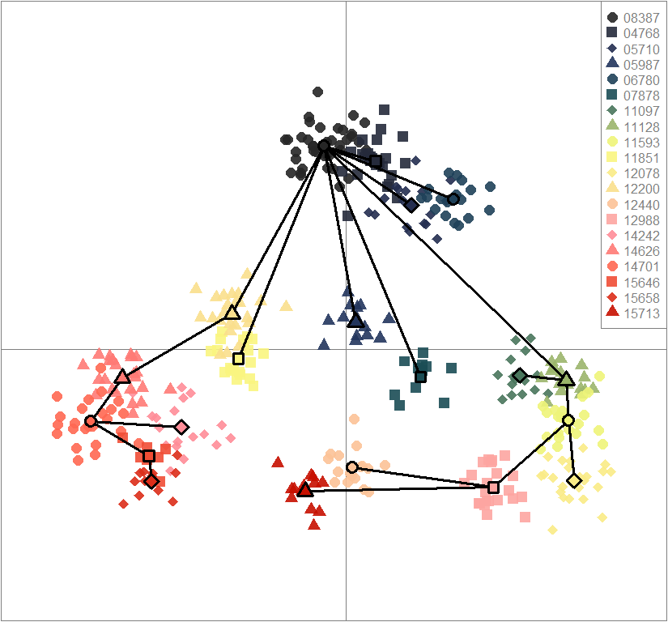
compoplot(dapc.obj, lab="", col=futrschwift.cols(20))
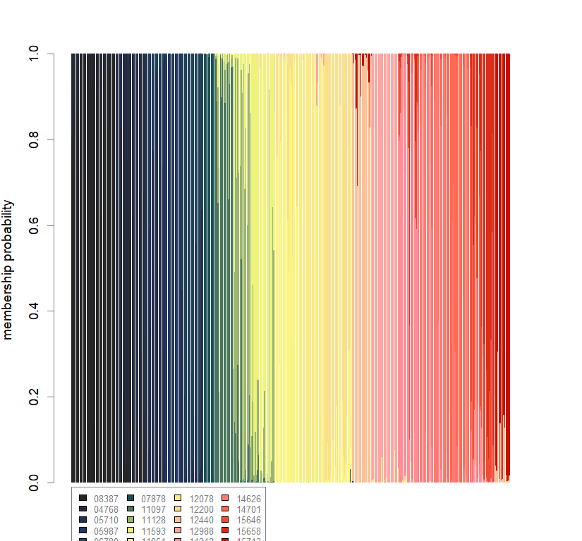
temp.dapc.obj <- dapc(m0.5_hclp_n, center=T, scale=F, n.pca=100, n.da=2)
temp <- optim.a.score(temp.dapc.obj, n=15, n.sim=30)
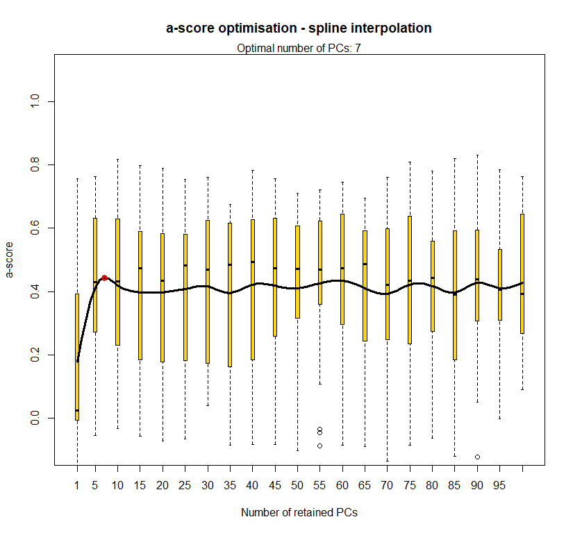
best.n.pca <- temp$best
dapc.obj <- dapc(m0.5_hclp_n, center=T, scale=F, n.pca=best.n.pca, n.da=2)
#plot parameters
par(mfrow=c(1,1), fg="gray50", pty='m', bty='o', mar=c(4,4,4,4), cex.main=1.3, cex.axis=1.1, cex.lab=1.2)
scatter(dapc.obj, col=futrschwift.cols(20), ratio.pca=0.3, bg="white", main="m = 0.5, high complexity, low permeability, neutral loci only",
pch=c(16,15,18,17), cell=0, cstar=0, solid=0.9, cex=1.8, clab=0,
mstree=TRUE, lwd=3, scree.da=FALSE, leg=TRUE, txt.leg=popNames(m0.5_hclp_n))
par(xpd=TRUE)
points(dapc.obj$grp.coord[,1], dapc.obj$grp.coord[,2], pch=21:24, cex=2, lwd=3, col="black", bg=futrschwift.cols(20))
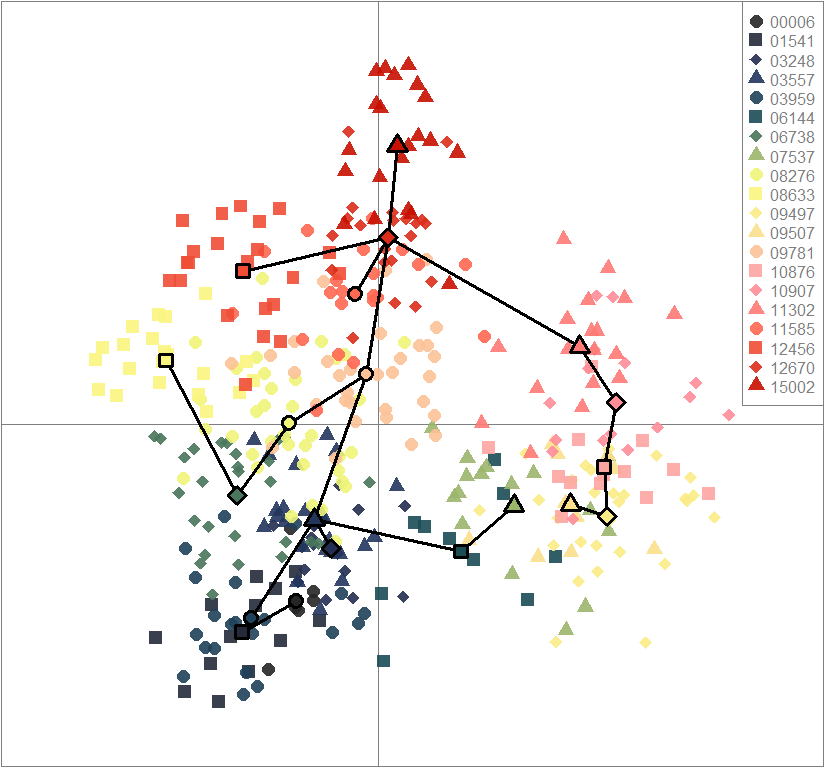
compoplot(dapc.obj, lab="", col=futrschwift.cols(20))
temp.dapc.obj <- dapc(m0.5_hclp_s, center=T, scale=F, n.pca=length(m0.5_hclp_s@tab[1,]), n.da=2)
temp <- optim.a.score(temp.dapc.obj, n=15, n.sim=30)
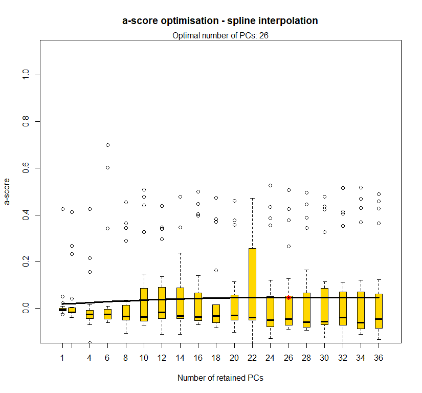
best.n.pca <- temp$best
dapc.obj <- dapc(m0.5_hclp_s, center=T, scale=F, n.pca=best.n.pca, n.da=2)
#plot parameters
par(mfrow=c(1,1), fg="gray50", pty='m', bty='o', mar=c(4,4,4,4), cex.main=1.3, cex.axis=1.1, cex.lab=1.2)
scatter(dapc.obj, col=futrschwift.cols(20), ratio.pca=0.3, bg="white", main="m = 0.5, high complexity, low permeability, selected loci only",
pch=c(16,15,18,17), cell=0, cstar=0, solid=0.9, cex=1.8, clab=0,
mstree=TRUE, lwd=3, scree.da=FALSE, leg=TRUE, txt.leg=popNames(m0.5_hclp_s))
par(xpd=TRUE)
points(dapc.obj$grp.coord[,1], dapc.obj$grp.coord[,2], pch=21:24, cex=2, lwd=3, col="black", bg=futrschwift.cols(20))

compoplot(dapc.obj, lab="", col=futrschwift.cols(20))
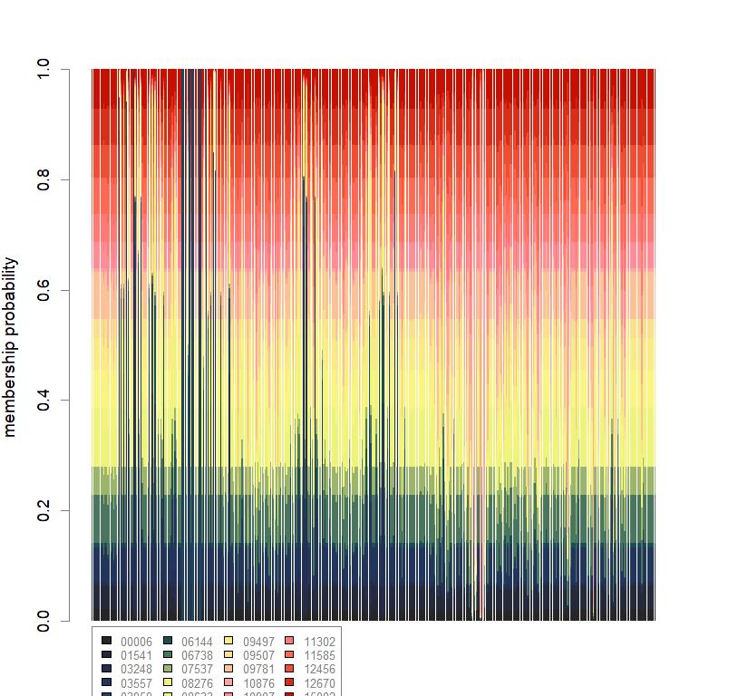
temp.dapc.obj <- dapc(m0.5_hclp_n.s, center=T, scale=F, n.pca=100, n.da=2)
temp <- optim.a.score(temp.dapc.obj, n=15, n.sim=30)
best.n.pca <- temp$best
dapc.obj <- dapc(m0.5_hclp_n.s, center=T, scale=F, n.pca=best.n.pca, n.da=2)
#plot parameters
par(mfrow=c(1,1), fg="gray50", pty='m', bty='o', mar=c(4,4,4,4), cex.main=1.3, cex.axis=1.1, cex.lab=1.2)
scatter(dapc.obj, col=futrschwift.cols(20), ratio.pca=0.3, bg="white", main="m = 0.5, high complexity, low permeability, neutral and selected loci",
pch=c(16,15,18,17), cell=0, cstar=0, solid=0.9, cex=1.8, clab=0,
mstree=TRUE, lwd=3, scree.da=FALSE, leg=TRUE, txt.leg=popNames(m0.5_hclp_n.s))
par(xpd=TRUE)
points(dapc.obj$grp.coord[,1], dapc.obj$grp.coord[,2], pch=21:24, cex=2, lwd=3, col="black", bg=futrschwift.cols(20))
compoplot(dapc.obj, lab="", col=futrschwift.cols(20))
temp.dapc.obj <- dapc(m0.1_hchp_n, center=T, scale=F, n.pca=100, n.da=2)
temp <- optim.a.score(temp.dapc.obj, n=15, n.sim=30)
best.n.pca <- temp$best
dapc.obj <- dapc(m0.1_hchp_n, center=T, scale=F, n.pca=best.n.pca, n.da=2)
#plot parameters
par(mfrow=c(1,1), fg="gray50", pty='m', bty='o', mar=c(4,4,4,4), cex.main=1.3, cex.axis=1.1, cex.lab=1.2)
scatter(dapc.obj, col=futrschwift.cols(20), ratio.pca=0.3, bg="white", main="m = 0.1, high complexity, high permeability, neutral loci only",
pch=c(16,15,18,17), cell=0, cstar=0, solid=0.9, cex=1.8, clab=0,
mstree=TRUE, lwd=3, scree.da=FALSE, leg=TRUE, txt.leg=popNames(m0.1_hchp_n))
par(xpd=TRUE)
points(dapc.obj$grp.coord[,1], dapc.obj$grp.coord[,2], pch=21:24, cex=2, lwd=3, col="black", bg=futrschwift.cols(20))
compoplot(dapc.obj, lab="", col=futrschwift.cols(20))
temp.dapc.obj <- dapc(m0.1_hchp_s, center=T, scale=F, n.pca=length(m0.1_hchp_s@tab[1,]), n.da=2)
temp <- optim.a.score(temp.dapc.obj, n=15, n.sim=30)
best.n.pca <- temp$best
dapc.obj <- dapc(m0.1_hchp_s, center=T, scale=F, n.pca=best.n.pca, n.da=2)
#plot parameters
par(mfrow=c(1,1), fg="gray50", pty='m', bty='o', mar=c(4,4,4,4), cex.main=1.3, cex.axis=1.1, cex.lab=1.2)
scatter(dapc.obj, col=futrschwift.cols(20), ratio.pca=0.3, bg="white", main="m = 0.1, high complexity, high permeability, selected loci only",
pch=c(16,15,18,17), cell=0, cstar=0, solid=0.9, cex=1.8, clab=0,
mstree=TRUE, lwd=3, scree.da=FALSE, leg=TRUE, txt.leg=popNames(m0.1_hchp_s))
par(xpd=TRUE)
points(dapc.obj$grp.coord[,1], dapc.obj$grp.coord[,2], pch=21:24, cex=2, lwd=3, col="black", bg=futrschwift.cols(20))
compoplot(dapc.obj, lab="", col=futrschwift.cols(20))
temp.dapc.obj <- dapc(m0.1_hchp_n.s, center=T, scale=F, n.pca=100, n.da=2)
temp <- optim.a.score(temp.dapc.obj, n=15, n.sim=30)
best.n.pca <- temp$best
dapc.obj <- dapc(m0.1_hchp_n.s, center=T, scale=F, n.pca=best.n.pca, n.da=2)
#plot parameters
par(mfrow=c(1,1), fg="gray50", pty='m', bty='o', mar=c(4,4,4,4), cex.main=1.3, cex.axis=1.1, cex.lab=1.2)
scatter(dapc.obj, col=futrschwift.cols(20), ratio.pca=0.3, bg="white", main="m = 0.1, high complexity, high permeability, neutral and selected loci",
pch=c(16,15,18,17), cell=0, cstar=0, solid=0.9, cex=1.8, clab=0,
mstree=TRUE, lwd=3, scree.da=FALSE, leg=TRUE, txt.leg=popNames(m0.1_hchp_n.s))
par(xpd=TRUE)
points(dapc.obj$grp.coord[,1], dapc.obj$grp.coord[,2], pch=21:24, cex=2, lwd=3, col="black", bg=futrschwift.cols(20))
compoplot(dapc.obj, lab="", col=futrschwift.cols(20))
temp.dapc.obj <- dapc(m0.5_hchp_n, center=T, scale=F, n.pca=100, n.da=2)
temp <- optim.a.score(temp.dapc.obj, n=15, n.sim=30)
best.n.pca <- temp$best
dapc.obj <- dapc(m0.5_hchp_n, center=T, scale=F, n.pca=best.n.pca, n.da=2)
#plot parameters
par(mfrow=c(1,1), fg="gray50", pty='m', bty='o', mar=c(4,4,4,4), cex.main=1.3, cex.axis=1.1, cex.lab=1.2)
scatter(dapc.obj, col=futrschwift.cols(20), ratio.pca=0.3, bg="white", main="m = 0.5, high complexity, high permeability, neutral loci only",
pch=c(16,15,18,17), cell=0, cstar=0, solid=0.9, cex=1.8, clab=0,
mstree=TRUE, lwd=3, scree.da=FALSE, leg=TRUE, txt.leg=popNames(m0.5_hchp_n))
par(xpd=TRUE)
points(dapc.obj$grp.coord[,1], dapc.obj$grp.coord[,2], pch=21:24, cex=2, lwd=3, col="black", bg=futrschwift.cols(20))
compoplot(dapc.obj, lab="", col=futrschwift.cols(20))
temp.dapc.obj <- dapc(m0.5_hchp_s, center=T, scale=F, n.pca=length(m0.5_hchp_s@tab[1,]), n.da=2)
temp <- optim.a.score(temp.dapc.obj, n=15, n.sim=30)
best.n.pca <- temp$best
dapc.obj <- dapc(m0.5_hchp_s, center=T, scale=F, n.pca=best.n.pca, n.da=2)
#plot parameters
par(mfrow=c(1,1), fg="gray50", pty='m', bty='o', mar=c(4,4,4,4), cex.main=1.3, cex.axis=1.1, cex.lab=1.2)
scatter(dapc.obj, col=futrschwift.cols(20), ratio.pca=0.3, bg="white", main="m = 0.5, high complexity, high permeability, selected loci only",
pch=c(16,15,18,17), cell=0, cstar=0, solid=0.9, cex=1.8, clab=0,
mstree=TRUE, lwd=3, scree.da=FALSE, leg=TRUE, txt.leg=popNames(m0.5_hchp_s))
par(xpd=TRUE)
points(dapc.obj$grp.coord[,1], dapc.obj$grp.coord[,2], pch=21:24, cex=2, lwd=3, col="black", bg=futrschwift.cols(20))
compoplot(dapc.obj, lab="", col=futrschwift.cols(20))
temp.dapc.obj <- dapc(m0.5_hchp_n.s, center=T, scale=F, n.pca=100, n.da=2)
temp <- optim.a.score(temp.dapc.obj, n=15, n.sim=30)
best.n.pca <- temp$best
dapc.obj <- dapc(m0.5_hchp_n.s, center=T, scale=F, n.pca=best.n.pca, n.da=2)
#plot parameters
par(mfrow=c(1,1), fg="gray50", pty='m', bty='o', mar=c(4,4,4,4), cex.main=1.3, cex.axis=1.1, cex.lab=1.2)
scatter(dapc.obj, col=futrschwift.cols(20), ratio.pca=0.3, bg="white", main="m = 0.5, high complexity, high permeability, neutral and selected loci",
pch=c(16,15,18,17), cell=0, cstar=0, solid=0.9, cex=1.8, clab=0,
mstree=TRUE, lwd=3, scree.da=FALSE, leg=TRUE, txt.leg=popNames(m0.5_hchp_n.s))
par(xpd=TRUE)
points(dapc.obj$grp.coord[,1], dapc.obj$grp.coord[,2], pch=21:24, cex=2, lwd=3, col="black", bg=futrschwift.cols(20))
compoplot(dapc.obj, lab="", col=futrschwift.cols(20))
Inferring genetic-environmental covariance with Co-inertia Analysis
#plot parameters
par(mfrow=c(1,1), fg="gray50", pty='m', bty='o', mar=c(4,4,4,4), cex.main=1.3, cex.axis=1.1, cex.lab=1.2)
##Gen and Env data frames
##make this iterative for all simulated datasets: currently only one of them shown here
gen <- m0.5_hclp_n.s
temp.dapc.obj <- dapc(gen, center=T, scale=F, n.pca=100, n.da=2)
temp <- optim.a.score(temp.dapc.obj, n=15, n.sim=30)
best.n.pca <- temp$best
dapc.obj <- dapc(gen, center=T, scale=F, n.pca=best.n.pca, n.da=2)
dfenv <- extract(fa_stk, gen$other)
dfenv.obj <- dfenv
dfgen.obj <- gen$tab
dfgenenv <- cbind(dfgen.obj, dfenv.obj)
dfgenenv <- na.omit(dfgenenv)
n.alleles <- length(dfgen.obj[1,])
n.env <- length(dfenv.obj[1,])
env.var <- seq(n.alleles + 1, n.alleles + n.env)
dfgen <- dfgenenv[,1:n.alleles]
dfenv <- dfgenenv[,env.var]
###Co-inertia###by individual###
pcenv <- dudi.pca(dfenv, cent=T, scale=T, scannf=F, nf=2)
pcgen <- dudi.pca(dfgen, cent=T, scale=F, scannf=F, nf=2)
coi <- coinertia(pcenv, pcgen, scan=F, nf=2)
#plot(coi, col="gray30")
#summary(coi)
#rvind <- RV.rtest(coi$lX, coi$lY, nrepet=9999)$obs
#rvindpval <- RV.rtest(coi$lX, coi$lY, nrepet=9999)$pvalue
###Co-inertia###by site/pop###
dap20 <- dapc.obj$grp
dfdap20 <- cbind(dap20, dfenv.obj)
dfdap20 <- na.omit(dfdap20)
dfdap20 <- dfdap20[,1]
dfdap20 <- as.factor(as.numeric(dfdap20))
pcenv <- dudi.pca(dfenv, cent=T, scale=T, scannf=F, nf=2)
bet1 <- bca(pcenv, dfdap20, scannf=F, nf=2)
pcgen <- dudi.pca(dfgen, cent=T, scale=F, scannf=F, nf=2)
bet2 <- bca(pcgen, dfdap20, scannf=F, nf=2)
coi20 <- coinertia(bet1, bet2, scan=F, nf=2)
plot(coi20, col="gray30")
summary(coi20)
## Coinertia analysis
##
## Class: coinertia dudi
## Call: coinertia(dudiX = bet1, dudiY = bet2, scannf = F, nf = 2)
##
## Total inertia: 31.18
##
## Eigenvalues:
## Ax1 Ax2 Ax3 Ax4
## 22.396 6.310 1.754 0.716
##
## Projected inertia (%):
## Ax1 Ax2 Ax3 Ax4
## 71.837 20.240 5.627 2.297
##
## Cumulative projected inertia (%):
## Ax1 Ax1:2 Ax1:3 Ax1:4
## 71.84 92.08 97.70 100.00
##
## Eigenvalues decomposition:
## eig covar sdX sdY corr
## 1 22.395764 4.732416 1.600793 3.020340 0.9787955
## 2 6.309858 2.511943 1.025729 2.508428 0.9762824
##
## Inertia & coinertia X (bet1):
## inertia max ratio
## 1 2.562539 2.578374 0.9938584
## 12 3.614658 3.617196 0.9992984
##
## Inertia & coinertia Y (bet2):
## inertia max ratio
## 1 9.122452 9.622948 0.9479893
## 12 15.414665 18.386972 0.8383471
##
## RV:
## 0.5371572
rv20 <- RV.rtest(coi20$lX, coi20$lY, nrepet=9999)$obs
rv20pval <- RV.rtest(coi20$lX, coi20$lY, nrepet=9999)$pvalue
###Co-inertia###by cluster###
##Clusters##
clust <- find.clusters(gen, cent=T, scale=F, n.pca=best.n.pca, method="kmeans", n.iter=1e7, n.clust=10, stat="BIC")
cl <- as.factor(as.vector(clust$grp))
gen$pop <- cl
sq <- as.character(seq(1,10))
popNames(gen) <- sq
dapc10 <- dapc(gen, center=T, scale=F, n.pca=best.n.pca, n.da=2)
scatter(dapc10, col=futrschwift.cols(10), ratio.pca=0.3, bg="white", pch=c(16,15,18,17), cell=0, cstar=0, solid=0.9, cex=1.8, clab=0, mstree=TRUE, lwd=3, scree.da=FALSE, leg=TRUE, txt.leg=popNames(gen))
par(xpd=TRUE)
points(dapc10$grp.coord[,1], dapc10$grp.coord[,2], pch=21:24, cex=2, lwd=3, col="black", bg=futrschwift.cols(10))
dap10 <- as.data.frame(dapc10$assign)
dfdap10 <- cbind(dap10, dfenv.obj)
dfdap10 <- na.omit(dfdap10)
dfenv10 <- dfdap10[,2:length(dfdap10[1,])]
dfdap10 <- dfdap10[,1]
dfgenenv10 <- cbind(dap10, gen$tab, dfenv.obj)
dfgenenv10 <- na.omit(dfgenenv10)
dfdap10 <- dfgenenv10[,1]
dfgenenv10.gen <- dfgenenv10[,2:n.alleles+1]
dfgenenv10.env <- dfgenenv10[,env.var+1]
pcenv10 <- dudi.pca(dfenv10, cent=T, scale=T, scannf=F, nf=2)
bet1 <- bca(pcenv10, dfdap10, scannf=F, nf=2)
pcgen10 <- dudi.pca(dfgen, cent=T, scale=F, scannf=F, nf=2)
bet2 <- bca(pcgen10, dfdap10, scannf=F, nf=2)
coi10 <- coinertia(bet1, bet2, scan=F, nf=2)
plot(coi10, col="gray30")
summary(coi10)
## Coinertia analysis
##
## Class: coinertia dudi
## Call: coinertia(dudiX = bet1, dudiY = bet2, scannf = F, nf = 2)
##
## Total inertia: 20.27
##
## Eigenvalues:
## Ax1 Ax2 Ax3 Ax4
## 19.07630 0.94346 0.18766 0.05781
##
## Projected inertia (%):
## Ax1 Ax2 Ax3 Ax4
## 94.1332 4.6555 0.9260 0.2853
##
## Cumulative projected inertia (%):
## Ax1 Ax1:2 Ax1:3 Ax1:4
## 94.13 98.79 99.71 100.00
##
## Eigenvalues decomposition:
## eig covar sdX sdY corr
## 1 19.0762965 4.3676420 1.4294467 3.084553 0.9905738
## 2 0.9434554 0.9713163 0.3679976 2.731910 0.9661604
##
## Inertia & coinertia X (bet1):
## inertia max ratio
## 1 2.043318 2.043883 0.9997236
## 12 2.178740 2.180329 0.9992714
##
## Inertia & coinertia Y (bet2):
## inertia max ratio
## 1 9.514466 9.611211 0.9899341
## 12 16.977801 17.519425 0.9690844
##
## RV:
## 0.6896561
#s.class(pcgen10$l1, dfdap10, col=futrschwift.cols(10))
#s.class(pcenv10$l1, dfdap10, col=futrschwift.cols(10))
rv10 <- RV.rtest(coi10$lX, coi10$lY, nrepet=9999)$obs
rv10pval <- RV.rtest(coi10$lX, coi10$lY, nrepet=9999)$pvalue
Comparison to DAPC: Inferring population structure with LEA package
library(LEA)
library(mapplots)
library(maps)
library(raster)
library(adegenet)
library(ggsci)
futr <- pal_futurama()
schwifty <- pal_rickandmorty()
futrschwift.cols <- colorRampPalette(c("gray15", schwifty(12)[3], futr(12)[11], schwifty(12)[c(1,9)], futr(12)[c(8,6,2)]))
#plot parameters
par(mfrow=c(1,1),fg="gray50",pty='m',bty='o',mar=c(4,4,4,4),cex.main=1.3,cex.axis=1.1,cex.lab=1.2)
geninds <- list(m0.1_lclp_n.s,
m0.1_lchp_n.s,
m0.1_hclp_n.s,
m0.1_hchp_n.s,
m0.5_lclp_n.s,
m0.5_lchp_n.s,
m0.5_hclp_n.s,
m0.5_hchp_n.s)
genind_names <- c("m0.1_lclp_n.s",
"m0.1_lchp_n.s",
"m0.1_hclp_n.s",
"m0.1_hchp_n.s",
"m0.5_lclp_n.s",
"m0.5_lchp_n.s",
"m0.5_hclp_n.s",
"m0.5_hchp_n.s")
ls_names <- c("LCLP landscape (m = 0.1)",
"LCHP landscape (m = 0.1)",
"HCLP landscape (m = 0.1)",
"HCHP landscape (m = 0.1)",
"LCLP landscape (m = 0.5)",
"LCHP landscape (m = 0.5)",
"HCLP landscape (m = 0.5)",
"HCHP landscape (m = 0.5)")
lea.dir <- c(
"C:/Users/chazh/Documents/Research Projects/Reticulitermes/Simulations/popRange/m_0_1/Simulated_Landscapes/500neutral+50selectedSNPs/Low_Complexity_Landscapes/landscapeR/Low_Permeability/",
"C:/Users/chazh/Documents/Research Projects/Reticulitermes/Simulations/popRange/m_0_1/Simulated_Landscapes/500neutral+50selectedSNPs/Low_Complexity_Landscapes/landscapeR/High_Permeability/",
"C:/Users/chazh/Documents/Research Projects/Reticulitermes/Simulations/popRange/m_0_1/Simulated_Landscapes/500neutral+50selectedSNPs/High_Complexity_Landscapes/virtualspecies/Low_Permeability/",
"C:/Users/chazh/Documents/Research Projects/Reticulitermes/Simulations/popRange/m_0_1/Simulated_Landscapes/500neutral+50selectedSNPs/High_Complexity_Landscapes/virtualspecies/High_Permeability/",
"C:/Users/chazh/Documents/Research Projects/Reticulitermes/Simulations/popRange/m_0_5/Simulated_Landscapes/500neutral+50selectedSNPs/Low_Complexity_Landscapes/landscapeR/Low_Permeability/",
"C:/Users/chazh/Documents/Research Projects/Reticulitermes/Simulations/popRange/m_0_5/Simulated_Landscapes/500neutral+50selectedSNPs/Low_Complexity_Landscapes/landscapeR/High_Permeability/",
"C:/Users/chazh/Documents/Research Projects/Reticulitermes/Simulations/popRange/m_0_5/Simulated_Landscapes/500neutral+50selectedSNPs/High_Complexity_Landscapes/virtualspecies/Low_Permeability/",
"C:/Users/chazh/Documents/Research Projects/Reticulitermes/Simulations/popRange/m_0_5/Simulated_Landscapes/500neutral+50selectedSNPs/High_Complexity_Landscapes/virtualspecies/High_Permeability/"
)
for (i in 1:8){
genind.obj <- geninds[[i]]
genotypes <- genind.obj$tab
coords <- genind.obj$other
setwd(lea.dir[i])
write.table(t(as.matrix(genotypes)), sep="", row.names=F, col.names=F, paste0(genind_names[i], ".geno"))
geno <- read.geno(paste0(genind_names[i],".geno"))
setwd(paste0(lea.dir[i],"LEA"))
source("POPSutilities.r")
setwd(lea.dir[i])
reps <- 5
maxK <- 15
#running pop structure inference
snmf.obj <- snmf(paste0(genind_names[i],".geno"), K=1:maxK, repetitions=reps, project="new",
alpha=10, iterations=100000,
entropy=TRUE, percentage=0.25)
plot(snmf.obj, cex=1.2, col="lightblue", pch=19)
#determining best K and picking best replicate for best K
ce <- list()
for(k in 1:maxK) ce[[k]] <- cross.entropy(snmf.obj, K=k)
best <- which.min(unlist(ce))
best.K <- ceiling(best/reps)
best.run <- which.min(ce[[best.K]])
barchart(snmf.obj, K=best.K, run=best.run,
border=NA, space=0, col=futrschwift.cols(best.K),
xlab="Individuals", ylab="Ancestry proportions",
main=paste("Ancestry bar chart for", ls_names[i]))
qmatrix <- Q(snmf.obj, K=best.K, run=best.run)
grid <- createGrid(xmin(fa_stk), xmax(fa_stk),
ymin(fa_stk), ymax(fa_stk), 260, 340)
constraints <- NULL
shades <- 10
futrschwift.gradient <- colorRampPalette(futrschwift.cols(best.K))
grad.cols <- futrschwift.gradient(shades*best.K)
ColorGradients_bestK <- list()
for(j in 1:best.K){
k.start <- j*shades-shades+1
k.fin <- j*shades
ColorGradients_bestK[[j]] <- c("gray95", grad.cols[k.start:k.fin])
}
maps(qmatrix, coords, grid, constraints, method="max",
colorGradientsList=ColorGradients_bestK,
main=paste("Mapped ancestry coefficients for", ls_names[i]),
xlab="Longitude", ylab="Latitude", cex=.5)
map(add=T, interior=F)
}


Comparison to DAPC: Inferring population structure with tess3r package
library(tess3r)
library(adegenet)
library(raster)
library(ggsci)
futr <- pal_futurama()
schwifty <- pal_rickandmorty()
futrschwift.cols <- colorRampPalette(c("gray15", schwifty(12)[3], futr(12)[11], schwifty(12)[c(1,9)], futr(12)[c(8,6,2)]))
#plot parameters
par(mfrow=c(1,1),fg="gray50",pty='m',bty='o',mar=c(4,4,4,4),cex.main=1.3,cex.axis=1.1,cex.lab=1.2)
geninds <- list(m0.1_lclp_n.s,
m0.1_lchp_n.s,
m0.1_hclp_n.s,
m0.1_hchp_n.s,
m0.5_lclp_n.s,
m0.5_lchp_n.s,
m0.5_hclp_n.s,
m0.5_hchp_n.s)
ls_names <- c("LCLP landscape (m = 0.1)",
"LCHP landscape (m = 0.1)",
"HCLP landscape (m = 0.1)",
"HCHP landscape (m = 0.1)",
"LCLP landscape (m = 0.5)",
"LCHP landscape (m = 0.5)",
"HCLP landscape (m = 0.5)",
"HCHP landscape (m = 0.5)")
for (i in 1:8){
genind.obj <- geninds[[i]]
genotypes <- genind.obj$tab
coords <- as.matrix(genind.obj$other)
reps <- 5
maxK <- 15
#running pop structure inference
tess3.obj <- tess3(X=genotypes, coord=coords, K=1:maxK,
method="projected.ls", rep=reps,
max.iteration=1000, tolerance=1e-06,
#max.iteration = 10000, tolerance = 1e-07,
mask=0.25,
ploidy=2)
#determining best K and picking best replicate for best K
ce <- list()
for(k in 1:maxK) ce[[k]] <- tess3.obj[[k]]$crossvalid.crossentropy
best <- which.min(unlist(ce))
best.K <- ceiling(best/reps)
best.run <- which.min(ce[[best.K]])
q.matrix <- qmatrix(tess3.obj, K=best.K)
shades <- 10
futrschwift.pal <- CreatePalette(futrschwift.cols(best.K), shades)
barplot(q.matrix, border = NA, space = 0,
col.palette = futrschwift.pal,
xlab = "Individuals", ylab = "Ancestry proportions",
main = paste("Ancestry bar chart for", ls_names[i]))
plot(q.matrix, coords, method = "map.max", interpol = FieldsKrigModel(10),
main = paste("Mapped ancestry coefficients for", ls_names[i]),
xlab = "Longitude", ylab = "Latitude",
resolution = c(260,340), cex = .9,
col.palette = futrschwift.pal)
}